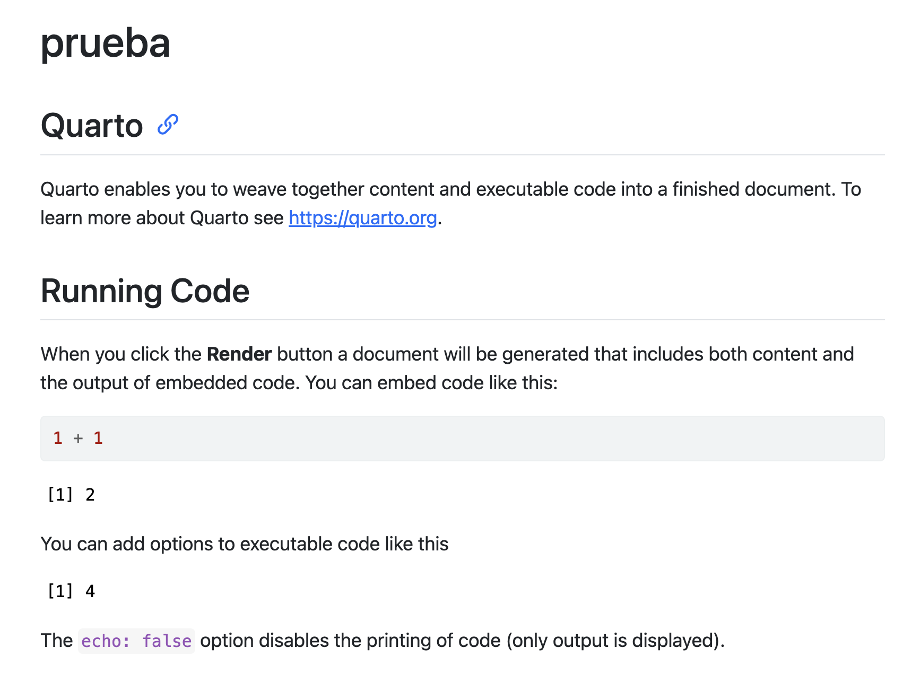
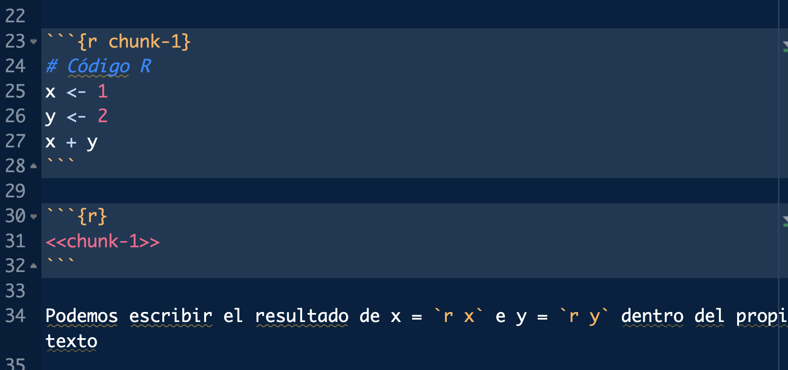

SOFTWARE PARA GESTIÓN DE BASES DE DATOS
Análisis de datos en R e introducción a Stata
¡Bienvenidos a R!
Dejad vuestras hojas de cálculo, Anacondas y SAS a un lado
¡Buenas!
Correo: javalv09@ucm.es. Despacho: 722 (3ª planta). Tutorías (curso 2024-2025): …

Javier Álvarez Liébana, de Carabanchel (Bajo).
Licenciado en Matemáticas (UCM). Doctorado en estadística (UGR).
Encargado de la visualización y análisis de datos covid del Principado de Asturias (2021-2022).
Miembro de la Sociedad Española de Estadística e IO y la Real Sociedad Matemática Española.
Actualmente, investigador y docente en la Facultad de Estadística de la UCM. Divulgando por Twitter e Instagram
Objetivos
.png)
Quitarnos el miedo a los errores en programación → a programar se aprende programando
Entender los conceptos básicos de R desde cero → aprender a abstraer ideas y algoritmos
Utilidad de programar → flujos de trabajo reproducibles, transparentes y mantenibles
Introducción al análisis y preprocesamiento de datos →
{tidyverse}Adquirir habilidades en la visualización de datos →
{ggplot2}
Evaluación
- Asistencia. No será obligatoria pero se valorará positivamente la participación.
- Evaluación continua: se han planteado 4 entregas individuales (5%-15%-25%-30%), así como una entrega final grupal (25%) (entre 4 y 7 personas).
- Examen final: solo obligatorio en caso de que en la continua individual (sin contar la grupal) no superes el 3.5 sobre 10 de nota media. En caso contrario el día de la entrega final grupal (día del examen oficial de enero) deberás realizar un examen final en lugar de la grupal.
- Nota máxima: para tener una nota final superior al 9 deberás tener al menos un 8.5 de nota media en la evaluación continua individual (sin contar la grupal).
Planificación entregas
Entrega I (5%): … (segunda mitad de clase, 60 minutos).
Entrega II (15%): … (120 minutos).
Entrega III (25%): … (120 minutos).
Entrega IV (30%): … de diciembre (120 minutos).
- Entrega grupal (25%) o examen final: … enero (10:00-13:30)
Se podrán modificar las fechas por saturación con otras asignaturas siempre y cuando el/la delegado/a lo solicite con más de 7 días de antelación.
Planificación
| CLASE | SEMANA | FECHAS | TOPIC | EJ. | WORKBOOK | ENTREGA | |||
|---|---|---|---|---|---|---|---|---|---|
| 1 | S1 | 9 sep | Primeros pasos en R | üíª | |||||
| 2 | S1 | 12 sep | Tipos básicos de datos y vectores | üíª üíª | üê£ | ||||
| 3 | S2 | 16 sep | Textos y primeras bases de datos | üíª üíª üíª | üê£ üê£ | ||||
| 4 | S2 | 19 sep | Comunicar: apuntes y simulacro de entrega | üê£ | |||||
| 5 | S3 | 23 sep | Entrega I | üéØ 5% | |||||
| 6 | S3 | 26 sep | Estructuras de control | üíª üíª | üê£ | ||||
| 7 | S4 | 30 sep | Funciones | üíª | üê£ | ||||
| 8 | S4 | 3 oct | Tidy data | üíª | üê£ | ||||
| 9 | S5 | 7 oct | Entrega II | üéØ 15% | |||||
| 10 | S5 | 10 oct | Tidyverse: filas (I) | … | … | ||||
| 11 | S6 | 14 oct | Tidyverse: filas (II) | … | … |
Materiales
- Diapositivas: diapositivas en
Quartodisponibles y actualizadas en https://javieralvarezliebana.es/docencia/R-datascience. En el menú de las diapositivas (abajo a la izquierda) tienes una opción para descargarlas en pdf enTools
Material: cuadernos de trabajo y materiales extras y resúmenes de paquetes
üóÉ Datos: datasets que usaremos a lo largo de la asignatura, disponibles en https://javieralvarezliebana.es/docencia/R-datascience/material
üìö Recursos de apoyo: en ingl√©s https://r4ds.had.co.nz/ y en castellano https://cdr-book.github.io/, y https://ivelasq.quarto.pub/intro-to-quarto/ para Quarto.
Datasets
- üóÉ Datos: datasets que usaremos a lo largo de la asignatura, disponibles en https://javieralvarezliebana.es/docencia/R-datascience/material
airqualitydel paquete{datasets}(ya instalado por defecto): medidas diarias (153 observaciones) de la calidad del aire en Nueva York, de mayo a septiembre de 1973. Se midieron 6 variables: ozono, radiación solar, viento, temperatura, mes y día.salto_longitud: guarda cómo ha progresado el récord de salto de longitud masculino. Tabla extraída de la wikipedia https://shorturl.at/Wqif1pinnipeddel paquete{Biostatistics}: peso corporal y cerebral de 33 especies de pinnípedos (morsas, leones marinos y elefantes marinos) desagregado por sexos y mono/poligamia.
Datasets
- üóÉ Datos: datasets que usaremos a lo largo de la asignatura, disponibles en https://javieralvarezliebana.es/docencia/R-datascience/material
discursos: recopila los discursos de navidad de los jefes de Estado en España (en dictadura y en democracia) desde 1946 hasta 2021relig_incomedel paquete{tidyr}: recopila los datos de ingresos anuales en función de la religión (fuente original https://www.pewresearch.org/religion/religious-landscape-study/)whodel paquete{tidyr}: datos de la OMS respecto infecciones por tuberculosis, desagregados por tipo de enfermedad, sexo y edad.billboarddel paquete{tidyr}: ranking top 100 de canciones según Billboard (algo parecido a Los 40) para el año 2000.
Clase 1: primeros pasos
Instalando R y RStudio. Primeros pasos. Scripts y proyectos
Requisitos
Para el curso los únicos requisitos serán:
- Conexión a internet (para la descarga de algunos datos y paquetes).
- Instalar R: será nuestro lenguaje. La descarga la haremos (gratuitamente) desde https://cran.r-project.org/
- Instalar RStudio desde https://posit.co/download/rstudio-desktop/


R vs RStudio


Programaremos como escribimos (castellano, por ejemplo) → R es lenguaje
- Necesitaremos una gramática, un lenguaje (
R)
- Y un entorno, por ejemplo un Word (
RStudio), para escribirlo
Instalación de R
El lenguaje R será nuestra gramática y ortografía (nuestras reglas de juego)
Paso 1: entra en https://cran.r-project.org/ y selecciona tu sistema operativo.
Paso 2: para Mac basta con que hacer click en el archivo .pkg, y abrirlo una vez descargado. Para sistemas Windows, debemos clickar en install R for the first time y después en Download R for Windows. Una vez descargado, abrirlo como cualquier archivo de instalación.
Paso 3: abrir el ejecutable de instalación.
Warning
Siempre que tengas que descargar algo de CRAN (ya sea el propio R o un paquete), asegúrate de tener conexión a internet.
Primera operación
Para comprobar la instalación, tras abrir R, deberías ver el R GUI (Graphical User Interface) con una pantalla blanca similar a esta (consola).

Primer código: a una variable llamada a le asignaremos el valor 1 (escribiremos el código en la consola y daremos «enter»). Tras ello haremos la suma a + b.
Primera operación
Para comprobar la instalación, tras abrir R, deberías ver el R GUI (Graphical User Interface) con una pantalla blanca similar a esta (consola).
Primer código: a una variable llamada a le asignaremos el valor 1 (escribiremos el código en la consola y daremos «enter»). Tras ello haremos la suma a + b.
Primera operación
Para comprobar la instalación, tras abrir R, deberías ver el R GUI (Graphical User Interface) con una pantalla blanca similar a esta (consola).
Primer código: a una variable llamada a le asignaremos el valor 1 (escribiremos el código en la consola y daremos «enter»). Tras ello haremos la suma a + b.
Fíjate que…
En la consola aparece un número [1]: simplemente es un contador de elementos (como contar filas en un Word)
Instalación de R Studio
RStudio será el Word que usaremos para escribir (lo que se conoce como un IDE: entorno integrado de desarrollo).
Paso 1: entra la web oficial de RStudio (ahora llamado Posit) y selecciona la descarga gratuita.
Paso 2: selecciona el ejecutable que te aparezca acorde a tu sistema operativo.
Paso 3: tras descargar el ejecutable, hay que abrirlo como otro cualquier otro y dejar que termine la instalación.
Organización de RStudio
Al abrir RStudio seguramente tengas tres ventanas:
- Consola: es el nombre para llamar a la ventana grande que te ocupa buena parte de tu pantalla. Prueba a escribir el mismo código que antes (la suma de las variables) en ella. La consola será donde ejecutaremos órdenes y mostraremos resultados.

Organización de RStudio
Al abrir RStudio seguramente tengas tres ventanas:
- Environment: la pantalla pequeña (puedes ajustar los márgenes con el ratón a tu gusto) que tenemos en la parte superior derecha. Nos mostrará las variables que tenemos definidas.

Organización de RStudio
Al abrir RStudio seguramente tengas tres ventanas:
- Panel multiusos: la ventana que tenemos en la parte inferior derecha no servirá para buscar ayuda de funciones, además de para visualizar gráficos.

¿Qué es R? ¿Por qué R?

¿Qué es R? ¿Por qué R?

R es la evolución del trabajo de los laboratorios Bell con el lenguaje S, que fue llevado al mundo del software libre por Ross Ihaka y Robert Gentleman en los años 90. La version R 1.0.0 se publicó el 29 de febrero de 2000.
¿Qué es R? ¿Por qué R?
R es el lenguaje estadístico por excelencia, creado por y para estadísticos/as, con 6 ventajas fundamentales frente a Excel, SAS, Stata o SPSS:
- Lenguaje de programación: la obviedad → análisis replicables
- Gratuito: la filosofía de la comunidad de
Res el compartir código bajo copyleft → uso ético de dinero y algoritmos
- Software libre: no solo es gratis sino que permite acceder libremente a código ajeno, incluso al propio código fuente → flexibilidad y transparencia (Free and Open Source Software FOSS)
¿Qué es R? ¿Por qué R?
R es el lenguaje estadístico por excelencia, creado por y para estadísticos/as, con 6 ventajas fundamentales frente a Excel, SAS, Stata o SPSS:
- Lenguaje modular: hemos instalado lo mínimo, pero existen códigos de otras personas que podemos reusar (casi 20 000 paquetes) → ahorro de tiempo e innovación inmediata
- Lenguaje de alto nivel: facilita la programación (como Python) → menor curva de aprendizaje
- Comunidad y empleabilidad: junto con Python es el lenguaje más utilizado en el campo de la estadística y la ciencia de datos en investigación, docencia, empresas (Línea Directa, Mapfre, Telefónica, Orange, Apple, Spotify, Netflix, El País, Civio, HP, etc) y organismos públicos (ISCIII, CNIC, CNIO, INE, IGN, CIS, CEO, DGT, AEMET, RTVE, etc)
¿Por qué programar?
Automatizar → te permitirá automatizar tareas recurrentes.
Replicabilidad → podrás replicar tu análisis siempre de la misma manera.
Flexibilidad → podrás adaptar el software a tus necesidades.
Transparencia → ser auditado por la comunidad.

Idea fundamental: paquetes
Una de las ideas claves de R es el uso de paquetes: códigos que otras personas han implementado para resolver un problema

- Instalación: descargamos los códigos de la web (necesitamos internet) → comprar un libro, solo una vez (por ordenador)
Idea fundamental: paquetes
Una vez instalado, hay dos manera de usar un paquete (traerlo de la estantería)
- Paquete entero: con
library(), usando el nombre del paquete sin comillas, cargamos en la sesión todo el libro
Te vas equivocar
Durante tu aprendizaje va a ser muy habitual que las cosas no salgan a la primera → te vas equivocar. No solo será importante asumirlo sino que es importante leer los mensajes de error para aprender de ellos.
- Mensajes de error: precedidos de «Error in…» y serán aquellos fallos que impidan la ejecución
Scripts (documentos .R)

Un script será el documento en el que programamos, nuestro archivo .doc (aquí con extensión .R) donde escribiremos las órdenes. Para abrir nuestro primero script, haz click en el menú en File < New File < R Script.
Cuidado
Es importante no abusar de la consola: todo lo que no escribas en un script, cuando cierres, lo habrás perdido.
Cuidado
R es case-sensitive: es sensible a mayúsculas y minúsculas por lo que x y X representa variables distintas.
Ejecutando el primer script
Ahora tenemos una cuarta ventana: la ventana donde escribiremos nuestros códigos. ¿Cómo ejecutarlo?
- Escribimos el código a ejecutar.
- Guardamos el archivo .R haciendo click en
Save current document.
- El código no se ejecuta salvo que se lo indiquemos. Tenemos tres opciones de ejecutar un script:
- Copiar y pegar en consola.
- Seleccionar líneas y
Ctrl+Enter - Activar Source on save a la derecha de guardar: no solo guarda sino que ejecuta el código completo.
Sé organizado: proyectos
De la misma manera que en el ordenador solemos trabajar de manera ordenada por carpetas, en RStudio podemos hacer lo mismo para trabajar de manera eficaz creando proyectos.
Un proyecto será una «carpeta» dentro de RStudio, de manera que nuestro directorio raíz automáticamente será la propia carpeta de proyecto (pudiendo pasar de un proyecto a otro con el menu superior derecho).
Podemos crear uno en una carpeta nueva o en una carpeta ya existente.

üíª Tu turno
üìù Crea en tu ordenador una carpeta de la asignatura y crea dentro de ella el proyecto de RStudio: es ah√≠ donde vas a guardar todo lo que hagamos a lo largo de este curso.Tras crear el proyecto tendrás un archivo R Project. A continuaci√≥n crea en dicha carpeta dos subcarpetas: datos (es ah√≠ donde irás guardando los distintos datasets que usaremos) y scripts (es ah√≠ donde irás guardando los archivos .R de cada clase)
üìù Dentro del proyecto crea un script ejercicios-clase1.R (dentro de la carpeta scripts). Una vez creado define en √©l una variable de nombre a y cuyo valor sea -1. Ejecuta el c√≥digo de las 3 maneras explicadas.
üìù A√±ade debajo otra l√≠nea para definir una variable b con el valor 5. Tras ello guarda la multiplicaci√≥n de ambas variables. Ejecuta el c√≥digo como consideres.
üìù Modifica el c√≥digo inferior para definir dos variables c y d, con valores 3 y -1. Tras ello divide las variables y guarda el resultado.
üìù Asigna un valor positivo a x y calcula su ra√≠z cuadrada; asigna otro negativo y y calcula su valor absoluto con la funci√≥n abs().
Toma nota
Comandos como sqrt(), abs() o max() son lo que llamamos funciones: líneas de código que hemos «encapsulado» bajo un nombre, y dado unos argumentos de entrada, ejecuta las órdenes (una especie de atajo). En las funciones los argumentos irán SIEMPRE entre paréntesis
üìù Usando la variable x ya definida, completa/modifica el c√≥digo inferior para guardar en una nueva variable z el resultado guardado en x menos 5.
üìù Define una variable x y as√≠gnale el valor -1. Define otra y y as√≠gnale el valor 0. Tras ello realiza las operaciones a) x entre y; b) ra√≠z cuadrada de x. ¿Qu√© obtienes?
Clase 2: primeros datos y vectores
¿Qué tipos de celdas (datos) existen? Concatenando celdas: vectores
De la CELDA a la TABLA
¿Qué tipo de dato podemos tener en cada celda de una tabla?

- Celda: dato individual de un tipo concreto.
- Variable: concatenación de valores del mismo tipo (vectores en R).
- Matriz: concatenación de variables del mismo tipo y longitud.
- Tabla: concatenación de variables de distinto tipo pero igual longitud
- Lista: concatenación de variables de distinto tipo y distinta longitud
Pero antes…buenas prácticas
Antes de seguir, es importante que sepas algo cuánto antes: empezar en la programación puede ser frustrante
Al igual que cuando aprendes un idioma nuevo, el primer obstáculo a solventar no es tanto qué decir sino cómo decirlo de manera correcta. Y en R pasa lo mismo, así que vamos a normalizar nuestra forma de programar lo máximo posible para evitar errores futuros.
Pero antes…buenas prácticas
- Tip 2: programa como escribes. Al igual que cuando redactas en castellano, acostúmbrate a incorporar espacios y saltos de línea paranoquedarteciego (es una buena práctica y no un requisito porque
Rno procesa los espacios)
- Tip 3: no seas caótico/a, estandariza nombres. Acostúmbrate siempre a nombrar las variables de la misma manera. El único requisito es que debe empezar siempre por una letra (y sin tildes). La forma más recomendable es la conocida como
snake_case
Pero antes…buenas prácticas
- Tip 4: facilita la lectura y escritura, pon límites. En
Tools < Global Optionspuedes personalizar algunas opciones deRStudio. EnCode < Displaypodemos indicarle enShow marginque los scripts nos muestren un margen “imaginario” (no interacciona con el código) para “forzarnos” a realizar un salto de línea.

Pero antes…buenas prácticas
- Tip 5: el tabulador es tu mejor amigo. En
RStudiotenemos una herramienta maravillosa: si escribes parte del nombre de una variable o función y tabulas,RStudiote autocompleta

Pero antes…buenas prácticas
- Tip 6: ni un paréntesis soltero. Siempre que abras un paréntesis deberás cerrarlo. Para facilitar esta tarea entra en
Tools < Global Options < Code < Displayy activa la opciónRainbow parentheses

Pero antes…buenas prácticas
- Tip 7: fíjate en el lateral izquierdo. No solo podrás ver la línea de código por la que vas sino que, en caso de estar cometiendo un error de sintaxis, el propio
RStudiote avisará.

- Tip 8: intenta trabajar siempre por proyectos (para esta clase, crea un script
clase2.Ren el proyecto que creamos en la anterior clase)
Ver más tips en https://r4ds.had.co.nz/workflow-basics.html#whats-in-a-name
Celdas: tipos de datos
¿Existen variables más allá de los números en la ciencia de datos? Piensa por ejemplo en los datos que podrías guardar de una persona:
- A la pregunta «¿estás matriculado en la Facultad?» la respuesta será lo que llamamos una variable lógica (
TRUEsi está matriculado oFALSEen otro caso).
- Su fecha de nacimiento será precisamente eso, una fecha.
Variables numéricas
El dato más sencillo (ya lo hemos usado) serán las variables numéricas. Para saber la clase de dato en R de una variable tenemos la función class()
Variables numéricas
El dato más sencillo (ya lo hemos usado) serán las variables numéricas. Para saber la clase de dato en R de una variable tenemos la función class()
Para saber su tipología (naturaleza o formato) variable tenemos typeof()
[1] "double"[1] "integer"Fíjate que…
En R tenemos una colección de funciones que empiezan por as.x() y que sirven como funciones de conversión: un dato que era de un tipo, lo convertimos a tipo x.
Variables numéricas
Además de los números «normales» tendremos el valor más/menos infinito codificado como Inf o -Inf
Variables numéricas
Con las variables numéricas podemos realizar las operaciones aritméticas de una calculadora: sumar (+)…
Variables de texto
Imagina que además de la edad de una persona queremos guardar su nombre: ahora la variable será de tipo character
Las cadenas de texto son un tipo con el que obviamente no podremos hacer operaciones aritméticas (sí otras operaciones como pegar o localizar patrones).
Recuerda que…
Las variables de tipo texto (character o string) van SIEMPRE entre comillas: no es lo mismo TRUE (valor lógico, binario) que "TRUE" (texto).
Primera función: paste
Como hemos comentado R llamaremos función a un trozo de código encapsulado bajo un nombre, y que depende de unos argumentos de entrada. Nuestra primera función será paste(): dadas dos cadenas de texto nos permite pegarlas.
Primera función: paste

¿Cómo saber qué argumentos necesita una función? Escribiendo en consola ? paste te aparecerá una ayuda en el panel multiusos.
En dicha ayuda podrás ver en su cabecera que argumentos ya tiene asignados por defecto la función
Primera función: paste
Los argumentos (y su detalle) también pueden ser consultado tabulando (detras una coma).

Funciones: argumentos por defecto
Es muy importante entender el concepto de argumento por defecto de una función en R: es un valor que la función usa pero a veces podemos no ver porque ya tiene un valor asignado.
[1] "Javier Álvarez"[1] "Javier Álvarez"Toma nota
El operador = lo reservaremos para asignar argumentos dentro de funciones. Para todas las demás asignaciones usaremos <-
Primer paquete: glue
Una forma más intuitiva de trabajar con textos es usar el paquete {glue}: lo primero que haremos será «comprar el libro» (si nunca lo hemos hecho). Tras ello cargamos el paquete
Con la función glue() de dicho paquete podemos usar variables dentro de cadenas de texto. Por ejemplo, «la edad es de … años», donde la edad está guardada en una variable.
Variables lógicas
Otro tipo fundamental serán las variables lógicas o binarias (dos valores):
TRUE: verdadero guardado internamente como un 1.FALSE: falso guardado internamente como un 0.
Variables lógicas
Como veremos en breve, las variables lógicas en realidad puede tomar un tercer valor: NA o dato ausente, representando las siglas de not available, y será muy habitual encontrarlo dentro de una base de datos.
Condiciones lógicas
Los valores lógicos suelen ser resultado de evaluar condiciones lógicas. Por ejemplo, imaginemos que queremos comprobar si una persona se llama Javi.
Con el operador lógico == preguntamos sí lo que tenemos guardado a la izquierda es igual que lo que tenemos a la derecha: es una pregunta
Fíjate que…
No es lo mismo <- (asignación) que == (estamos preguntando, es una comparación lógica).
Condiciones lógicas
Además de las comparaciones «igual a» frente «distinto», también comparaciones de orden como menor que <, mayor que >, <= o >=.
¿Tiene la persona menos de 32 años?
Variables de fecha
Un tipo de datos muy especial: los datos de tipo fecha.
Parece una simple cadena de texto pero debería representar un instante en el tiempo. ¿Qué debería suceder si sumamos un 1 a una fecha?
Las fechas NO pueden ser texto: debemos convertir la cadena de texto a fecha.
Variables de fecha
Una vez instalado, de todos los paquetes (libros) que tenemos, le indicaremos que nos cargue ese concretamente.
Para convertir a tipo fecha usaremos la función as_date() del paquete {lubridate} (por defecto en formato yyyy-mm-dd)
Variables de fecha
En as_date() el formato de fecha por defecto es yyyy-mm-dd así si la cadena de texto no se introduce de manera adecuada…
Para cualquier otro formato debemos especificarlo en el argumento opcional format = ... tal que %d representa días, %m meses, %Y en formato de 4 años y %y en formato de 2 años.
Variables de fecha
En dicho paquete tenemos funciones muy útiles para manejar fechas:
- Con
today()podemos obtener directamente la fecha actual.
Resúmenes de paquetes

Amplia contenido
Tienes un resumen en pdf de los paquetes más importantes en la carpeta correspondiente en el campus
üíª Tu turno
Intenta realizar los siguientes ejercicios sin mirar las soluciones
üìù Define una variable que guarde tu edad (llamada edad) y otra con tu nombre (llamada nombre)
üìù Comprueba con dicha variable edad si NO tiene 60 a√±os o si se llama "Ornitorrinco" (debes obtener variables l√≥gicas como resultado)
üìù ¿Por qu√© el c√≥digo inferior da error?
üìù Define otra variable llamada hermanos que responda la pregunta ¬´¬øtienes hermanos?¬ª y otra variable que almacene tu fecha de nacimiento (llamada fecha_nacimiento).
üìù Define otra variable con tus apellidos (llamada apellidos) y usa glue() para tener, en una sola variable llamada nombre_completo, tu nombre y apellidos separando nombre y apellido por una coma
Vectores: concatenar
Cuando trabajamos con datos normalmente tendremos columnas que representan variables: llamaremos vectores a una concatenación de celdas (valores) del mismo tipo (lo que sería una columna de una tabla).
La forma más sencilla es con el comando c() (c de concatenar), y basta con introducir sus elementos entre paréntesis y separados por comas
Tip
Un número individual x <- 1 (o bien x <- c(1)) es en realidad un vector de longitud uno –> todo lo que sepamos hacer con un número podemos hacerlo con un vector de ellos.
Vectores: concatenar

Secuencias numéricas
El vector más famoso será el de tipo numérico, y en concreto, las conocidas como secuencias numéricas (por ejemplo, los días del mes), usadas para, entre otras cosas, indexar bucles.
El comando seq(inicio, fin) nos permite crear una secuencia numérica desde un elemento inicial hasta uno final, avanzando de uno en uno.
Secuencias numéricas
Un atajo es el comando 1:n, que nos devuelve lo mismo que seq(1, n)
Si el elemento inicial es mayor que el final, entenderá que la secuencia es en orden decreciente.
Secuencias numéricas
Otras veces nos interesará definir una secuencia con una longitud concreta
[1] 1.000000 9.166667 17.333333 25.500000 33.666667 41.833333 50.000000Incluso puede nos interese generar un vector de n elementos repetidos
Vectores de caracteres
Un vector es una concatenación de elementos del mismo tipo, pero no tienen porque ser necesariamente números. Vamos a crear una frase de ejemplo.
Vectores de caracteres
¿Qué sucederá si concatenamos elementos de diferente tipo?
Fíjate que como todos tienen que ser del mismo tipo, lo que hace R es convertir todo a texto, violando la integridad del dato
Operaciones con vectores
Con los vectores numéricos podemos hacer las mismas operaciones aritméticas que con los números → un número es un vector (de longitud uno)
¿Qué sucederá si sumamos o restamos un valor a un vector?
Suma de vectores
Los vectores también pueden interactuar entre ellos, así que podemos definir, por ejemplo, sumas de vectores (elemento a elemento)
Dado que la operación (por ejemplo, una suma) se realiza elemento a elemento, ¿qué sucederá si sumamos dos vectores de distinta longitud?
Comparar vectores
Una operación muy habitual es preguntar a los datos mediante el uso de condiciones lógicas. Por ejemplo, si definimos un vector de temperaturas…
¿Qué días hizo menos de 22 grados?
Nos devolverá un vector lógico, en función de si cada elemento cumple o no la condición pedida (de igual longitud que el vector preguntado)
Comparar vectores
Las condiciones lógicas pueden ser combinadas de dos maneras:
- Intersección: todas las condiciones concatenadas se deben cumplir (conjunción y con
&) para devolver unTRUE
- Unión: basta con que al menos una se cumpla (conjunción o con
|)
Acceder a elementos
Otra operación muy habitual es la de acceder a elementos. La forma más sencilla es usar el operador [i] (acceder al elemento i-ésimo)
Dado que un número no es más que un vector de longitud uno, esta operación también la podemos aplicar usando un vector de índices a seleccionar
Tip
Para acceder al último, sin preocuparnos de cuál es, podemos pasarle como índice la propia longitud x[length(x)]
Eliminar elementos
Otras veces no querremos seleccionar sino eliminar algunos elementos. Deberemos repetir la misma operación pero con el signo - delante: el operador [-i] no selecciona el elemento i-ésimo del vector sino que lo «des-selecciona»
En muchas ocasiones los queremos seleccionar o eliminar en base a condiciones lógicas, en función de los valores, así que pasaremos como índice la propia condición (recuerda, x < 2 nos devuelve un vector lógico)
Sumar vectores
También podemos hacer uso de operaciones estadísticas como por ejemplo sum() que, dado un vector, nos devuelve la suma de todos sus elementos.
¿Qué sucede cuando falta un dato (ausente)?
Sumar vectores
Como hemos comentado que los valores lógicos son guardados internamente como 0 y 1, podremos usarlos en operaciones aritméticas.
Por ejemplo, si queremos averiguar el número de elementos que cumplen una condición (por ejemplo, menores que 3), los que lo hagan tendrán asignado un 1 (TRUE) y los que no un 0 (FALSE) , por lo que basta con sumar dicho vector lógico para obtener el número de elementos que cumplen
Suma acumulada
Otra operación habitual que puede sernos útil es la suma acumulada con cumsum() que, dado un vector, nos devuelve un vector a su vez con el primero, el primero más el segundo, el primero más el segundo más el tercero…y así sucesivamente.
¿Qué sucede cuando falta un dato (ausente)?
En el caso de la suma acumulada lo que sucede es que a partir de ese valor, todo lo acumulado posterior será ausente.
Diferencia
Otra operación habitual que puede sernos útil es la diferencia (con retardo) con diff() que, dado un vector, nos devuelve un vector con el segundo menos el primero, el tercero menos el segundo, el cuarto menos el tercero…y así sucesivamente.
Media
Otras operaciones habituales son la media, mediana, percentiles, etc.
- Media: medida de centralidad que consiste en sumar todos los elementos y dividirlos entre la cantidad de elementos sumados. La más conocida pero la menos robusta: dado un conjunto, si se introducen valores atípicos o outliers (valores muy grandes o muy pequeños), la media se perturba con mucha facilidad.
Percentiles
Otras operaciones habituales son la media, mediana, percentiles, etc.
- Mediana: medida de centralidad que consiste en ordenar los elementos y quedarse con el que ocupa la mitad.
Ordenar vectores
Por último, una acción habitual es saber ordenar valores:
sort(): devuelve el vector ordenado. Por defecto de menor a mayor pero condecreasing = TRUEpodemos cambiarlo
[1] 7 20 23 25 33 41 65 77 81[1] 81 77 65 41 33 25 23 20 7üíª Tu turno
Intenta realizar los siguientes ejercicios sin mirar las soluciones
- Ejercicio 1
- Ejercicio 2
- Ejercicio 3
- Ejercicio 4
- Ejercicio 5
- Ejercicio 6
- Ejercicio 7
- Ejercicio 8
- Ejercicio 9
- Ejercicio 10
- Ejercicio 11
- Ejercicio 12
üìù Define el vector x como la concatenaci√≥n de los 5 primeros números impares. Calcula la longitud del vector
üìù Accede al tercer elemento de x. Accede al último elemento (sin importar la longitud, un c√≥digo que pueda ejecutarse siempre). Elimina el primer elemento.
üìù Obt√©n los elementos de x mayores que 4. Calcula el vector 1/x y guárdalo en una variable.
üìù Crea un vector que represente los nombres de 5 personas, de los cuales uno es desconocido.
üìù Encuentra del vector x de ejercicios anteriores los elementos mayores (estrictos) que 1 Y ADEM√ÅS menores (estrictos) que 7. Encuentra una forma de averiguar si todos los elementos son o no positivos.
üìù Dado el vector x <- c(1, -5, 8, NA, 10, -3, 9), ¿por qu√© su media no devuelve un número sino lo que se muestra en el c√≥digo inferior?
üìù Dado el vector x <- c(1, -5, 8, NA, 10, -3, 9), extrae los elementos que ocupan los lugares 1, 2, 5, 6.
üìù Dado el vector x del ejercicio anterior, ¿cuales tienen un dato ausente? Pista: las funciones is.algo() comprueban si el elemento es tipo algo (tabula)
üìù Define el vector x como la concatenaci√≥n de los 4 primeros números pares. Calcula el número de elementos de x menores estrictamente que 5.
üìù Calcula el vector 1/x y obt√©n la versi√≥n ordenada (de menor a mayor) de las dos formas posibles
üê£ Caso práctico
En el paquete {datasets} (ya instalado por defecto) tenemos diversos conjuntos de datos y uno de ellos es airquality. Debajo te he extraído 3 variables de dicho dataset (fíjate que se hace con datos$variable, ese dolar será importante en el futuro).
Los datos capturan medidas diarias (n = 153 observaciones) de la calidad del aire en Nueva York, de mayo a septiembre de 1973. Se midieron 6 variables: niveles de ozono, radiación solar, viento, temperatura, mes y día.
Intenta responder a las preguntas planteadas en el workbook
Clase 3: textos y primeras tablas
Profundizando en variables de tipo texto. Primeras bases de datos
Profundizando en textos
Aunque no podamos hacer operaciones aritméticas con ellos si serán importante algunas operaciones que podamos realizar con las cadenas de texto
Para eso usaremos el paquete {stringr} (dentro del mismo «universo de paquetes» de {lubridate}, del que hablaremos más adelante)
Profundizando en textos
En dicho paquete vamos a trabajar particularmente con cuatro familias de funciones
Manipulación
Tratamiento de espacios
Búsqueda de patrones
Utilidades básicas
- Longitud de un texto: para calcular la longitud de una cadena de texto podemos usar
str_length()
Como ves cuenta tanto números como espacios como caracteres que no sean alfanuméricos. Además si el texto es ausente devuelve ausente
Utilidades básicas
- Ordenar: con
str_order()podemos ordenar cadenas de texto según su orden alfabético (distinguiendo..._sort()y..._order()como con los números)
Manipulación
- Extraer subcadenas: dada una cadena de texto,
str_sub(texto, star = ..., end = ...)nos extrae la subcadena desde la posiciónstarhastaend(si es negativo empieza a contar por detrás).
Manipulación
- Extraer subcadenas: la función
str_sub()permite aplicarlo a de manera vectorial a múltiples cadenas de texto, e incluso usarla para asignar valores.
Manipulación
- Duplicar cadenas: con
str_dup(..., times = ...), dada una cadena de texto (o varias), podemos repetir una cadenatimesveces.
Manipulación
- Concatenar cadenas: con
str_cpodemos concatenar distintas cadenas de texto (consep = ...indicamos el caracter que hará de separador)
Manipulación
- Mayúsculas/minúsculas: con
str_to_...()podemos convertir textos a mayúsculas (..._upper), a minúsculas (..._lower) y a título (..._title, primera letra de cada palabra en mayúscula)
Manipulación
- Reemplazar:
str_replace()busca un patrón dado en una cadena de texto y, si la encuentra, la sustituye pro otra de reemplazo
[1] "jav*" "sandra" "carlos"Con str_replace_all() reemplazamos todas las coincidencias (por defecto sino solo se reemplaza la primera)
Espacios en blanco
- Rellenar: la función
str_pad()rellena una cadena con espacios (al inicio por defecto) para que tenga anchura indicada. Conside = "both"como argumento extra nos añade en ambos lados. Conside = "right"los añade al final. Conpad = ...podemos decidir si queremos rellenar con otro tipo de caracter (espacio por defecto).
[1] " abc"[1] " abc "[1] "abc***"Espacios en blanco
- Eliminar espacios: con
str_trim()podemos eliminar espacios en blanco al inicio y al final de la cadena. Si añadimosside = ...podemos cambiar si queremos que solo los elimine al final o al inicio (por defecto, en ambos). Constr_squish()cambiamos cualquier sucesión de espacios en blanco en medio del texto por uno solo (y elimina al inicio y final)
Patrones
- Detectar: con
str_detect()podemos detectar si una cadena de texto contiene o no una secuencia de caracteres
[1] TRUE TRUE FALSE[1] FALSE TRUE TRUE[1] FALSE FALSE FALSEPatrones
- Expresiones regulares: no solo vamos a poder detectar patrones simples sino que podemos hacer uso de las conocidas como expresiones regulares, indicándole por ejemplo que queremos localizar todo patrón que sea, al menos una letra
Patrones
- Expresiones regulares: un buen manejo de estas expresiones puede sernos muy útil para, por ejemplo, detectar formatos correctos en DNI o números de teléfono (de Madrid, por ejemplo).
Vamos a considerar que un formato correcto de DNI es aquel seguido por 8 números ([0-9]{8}) seguido directamente de una letra mayúscula ([A-Z]).
[1] FALSE TRUE FALSE FALSEPatrones
- Contar patrones: con
str_count()podemos contar cuantas veces aparece un mismo patrón
Patrones
- Localizar posiciones:
str_locate()nos permite localizar la primera posición en la que se produce un patrón. Constr_locate_all()obtenemos todos
Patrones
- Extraer patrones: con
str_extract()podemos extraer patrones (constr_extract_all()todos ellos) de una cadena de texto.
str_extract(c("DNI: 5050W", "DNI: 50558040W, DNI: 50558080-W", "DNI: 50558080-W"),
pattern = "[0-9]{8}[A-Z]|[0-9]{8}[-][A-Z]")[1] NA "50558040W" "50558080-W"str_extract_all(c("DNI: 5050W", "DNI: 50558040W, DNI: 50558080-W", "DNI: 50558080-W"),
pattern = "[0-9]{8}[A-Z]|[0-9]{8}[-][A-Z]")[[1]]
character(0)
[[2]]
[1] "50558040W" "50558080-W"
[[3]]
[1] "50558080-W"Patrones
- Dividir: con
str_split()podemos localizar un patrón y dividir la cadena de texto siempre que aparezca (constr_split_fixed()podemos dividir en un número concreto de trozos)
[[1]]
[1] "a" "b" "c"
[[2]]
[1] "ab" "c" "d" "e" [,1] [,2]
[1,] "a" "b-c"
[2,] "ab" "c-d-e"Si usamos boundary() como patrón podemos dividir en base a caracteres, frases, palabras, etc.
üíª Tu turno (textos)
El dataset será discursos (extraído de https://github.com/lirondos/discursos-de-navidad) donde están guardados los discursos de navidad de los jefes de Estado de España desde 1946 hasta 2021.
üìù Convierte todos los discurso a minúscula.
üìù Elimina signos de puntuaci√≥n tales como ‚Äú:‚Äù, ‚Äú,‚Äù, ‚Äú.‚Äù, ‚Äú;‚Äù, ‚Äú¬°‚Äù, ‚Äú!‚Äù, ‚Äú¬ø‚Äù y ‚Äú?‚Äù. Tras ello elimina espacios adelante, atrás y en medio si existen solo deja uno de ellos.
üìù Crea una nueva variable long con la longitud de cada discurso
üìù A√±ade una nueva variable n_words con el n¬∫ palabras de cada discurso. Pista: si tras dividir cada discurso en palabras usas length() te devolverá seguro 76 ya que lo ha guardado en un tipo de dato llamado lista. Para calcular la longitud de cada uno de los 76 elementos de la lista usaremos lengths()
üìù Determina los 5 a√±os con mayor longitud, y los 5 a√±os con menor número de palabras
üìù Incorpora una nueva variable llamada spain que calcule el número de veces que se dice ‚Äúespa√±oles‚Äù, ‚Äúespa√±olas‚Äù o ‚Äúespa√±a‚Äù en el discurso. Determina los 5 a√±os d√≥nde menos se menten dichas palabras
üê£ Caso práctico I: textos
Para practicar textos y tibbles vamos a usar el dataset salto_longitud que tienes guardado en la carpeta de datos, que guarda cómo ha progresado el récord de salto de longitud masculino. Dicha tabla ha sido extraída directamente de la wikipedia https://en.wikipedia.org/wiki/Men%27s_long_jump_world_record_progression#Low_altitude_record_progression_1965%E2%80%931991
Aunque más adelante veremos como extraerlo, puedes ver debajo si quieres el código que se ha usado para extraer la tabla
Intenta responder a las preguntas planteadas en el workbook
Primera base de datos
Cuando analizamos datos solemos tener varias variables de cada individuo: necesitamos una «tabla» que las recopile. La opción más inmediata son las matrices: concatenación de variables del mismo tipo e igual longitud.
Imagina que tenemos estaturas y pesos de 4 personas. ¿Cómo crear un dataset con las dos variables?
Primer intento: matrices
También podemos construir la matriz por filas con la función rbind() (concatenar - bind - por filas - rows), aunque lo recomendable es tener cada variable en columna e individuo en fila como luego veremos.
[,1] [,2] [,3] [,4]
estaturas 150 160 170 180
pesos 63 70 85 95- Podemos «visualizar» la matriz con
View(matriz).
Primer intento: matrices
También podemos «darle vuelta» (matriz transpuesta) con t().
Dado que ahora tenemos dos dimensiones en nuestros datos, para acceder a elementos con [] deberemos proporcionar dos índices separados por comas: índice de la fila y de la columna
Primer intento: matrices
En algunas casos querremos obtener los datos totales de un individuo (una fila concreta pero todas las columnas) o los valores de toda una variable para todos los individuos (una columna concreta pero todas las filas). Para ello dejaremos sin rellenar uno de los índices
estaturas pesos
160 70 [1] 150 160 170 180Primer intento: matrices
También podemos definir una matriz a partir de un vector numérico, reorganizando los valores en forma de matriz (sabiendo que los elementos se van colocando por columnas).
Operaciones con matrices
Con las matrices sucede como con los vectores: cuando aplicamos una operación aritmética lo hacemos elemento a elemento
Operaciones con matrices
También podemos realizar operaciones por columnas/filas sin recurrir a bucles con la función apply(), y le indicaremos como argumentos
- la matriz
- el sentido de la operación (
MARGIN = 1por filas,MARGIN = 2por columnas) - la función a aplicar
- argumentos extra que necesite la función
üíª Tu turno (matrices)
Intenta realizar los siguientes ejercicios sin mirar las soluciones
üìù Modifica el c√≥digo inferior para definir una matriz x de unos, de 3 filas y 7 columnas.
üìù A la matriz anterior, suma un 1 a cada número de la matriz y divide el resultado entre 5. Tras ello calcula su transpuesta
üìù ¿Por qu√© el c√≥digo inferior nos devuelve dicho mensaje de aviso?
üìù Define la matriz x <- matrix(1:12, nrow = 4). Tras ello obt√©n los datos del primer individuo, los datos de la tercera variable, y el elemento (4, 1).
üìù Define una matriz de 2 variables y 3 individuos tal que cada variable capture la estatura y la edad 3 personas, de manera que la edad de la segunda persona sea desconocida (ausente). Tras ello calcula la media de cada variable (¡nos debe de volver un número!)
Segundo intento: data.frame
Las matrices tienen el mismo problema que los vectores: si juntamos datos de distinto tipo, se perturba la integridad del dato ya que los convierte (fíjate en el código inferior: las edades y los TRUE/FALSE los ha convertido a texto)
Segundo intento: data.frame
Para poder trabajar con variables de distinto tipo tenemos en R lo que se conoce como data.frame: concatenación de variables de igual longitud pero que pueden ser de tipo distinto.
Segundo intento: data.frame
Dado que un data.frame es ya un intento de «base de datos» las variables no son meros vectores matemáticos: tienen un significado y podemos (debemos) ponerles nombres que describan su significado
Segundo intento: data.frame
¡TENEMOS NUESTRO PRIMER CONJUNTO DE DATOS! (estrictamente no podemos hablar de base de datos pero de momento como lo si fuesen). Puedes visualizarlo escribiendo su nombre en consola o con View(tabla)

Acceso a variables
Si queremos acceder a sus elementos, al ser de nuevo datos tabulados, podemos acceder como en las matrices (no recomendable): de nuevo tenemos dos índices (filas y columnas, dejando libre la que no usemos)
edad estado nombre f_nacimiento
2 24 NA laura 1992-04-01[1] "javi" "laura" "lucía"[1] 24
Pero también tiene las ventajas de una «base» de datos : podemos aceder a las variables por su nombre (lo recomendable ya que las variables pueden cambiar de posición y ahora sí tienen un significado), poniendo el nombre de la tabla seguido del símbolo $ (con el tabulador, nos aparecerá un menú de columnas a elegir)
Funciones de consulta
names(): nos muestra los nombres de las variables
Añadir variable
Si tenemos uno ya creado y queremos añadir una columna es tan simple como usar la función data.frame() que ya hemos visto para concatenar la columna. Vamos añadir por ejemplo una nueva variable, el número de hermanos de cada individuo.
Intento final: tibble
Las tablas en formato data.frame tienen algunas limitaciones. La principal es que no permite la recursividad: imagina que definimos una base de datos con estaturas y pesos, y queremos una tercera variable con el IMC
Error in data.frame(estatura = c(1.7, 1.8, 1.6), peso = c(80, 75, 70), : object 'peso' not foundEn adelante usaremos el formato tibble (data.frame mejorado) del paquete {tibble}
Intento final: tibble
datos_tb <-
tibble("estatura" = c(1.7, 1.8, 1.6), "peso" = c(80, 75, 70), "IMC" = peso / (estatura^2))
datos_tb# A tibble: 3 × 3
estatura peso IMC
<dbl> <dbl> <dbl>
1 1.7 80 27.7
2 1.8 75 23.1
3 1.6 70 27.3Las tablas en formato tibble nos permitirá una gestión más ágil, eficiente y coherente de los datos, con 4 ventajas principales:
- Metainformación: si te fijas en la cabecera, nos dice ya automáticamente el número de filas y columnas, y el tipo de cada variable
- Recursividad: permite definir las variables secuencialmente (como hemos visto)
Intento final: tibble
- Consistencia: si accedes a una columna que no existe avisa con un warning
- Por filas: crear por filas (copiar y pegar de una tabla) con
tribble()
Tip
El paquete {datapasta} nos permite copiar y pegar tablas de páginas web y documentos sencillos
Recapitulando
- Cada celda puede ser de un tipo diverso: números, texto, fechas, valores lógicos, etc
- Un vector es una concatenación de celdas (las futuras columnas de nuestras tablas) –> En
Rpor defecto las operaciones se hacen elemento a elemento
- Una matriz nos permite concatenar variables del MISMO tipo y MISMA longitud –> datos tabulados
- Un data.frame nos permite concatenar variables de DISTINTO tipo y MISMA longitud –> usaremos tibble como una opción mejorada de base de datos
üíª Tu turno (tb/df)
Intenta realizar los siguientes ejercicios sin mirar las soluciones
üìù Carga del paquete {datasets} el conjunto de datos airquality (variables de la calidad del aire de Nueva York desde mayo hasta septiembre de 1973). ¿Es el conjunto de datos airquality de tipo tibble? En caso negativo, convi√©rtelo a tibble (busca en la documentaci√≥n del paquete en https://tibble.tidyverse.org/index.html).
üìù Una vez convertido a tibble obt√©n el nombre de las variables y las dimensiones del conjunto de datos. ¿Cuántas variables hay? ¿Cuántos d√≠as se han medido?
üìù Filtra solo los datos del mes de agosto. ¿C√≥mo indicarle que queremos solo las filas que cumplan una condici√≥n concreta? (pista: en realidad todo son vectores ‚Äúformateados‚Äù)
üìù Selecciona aquellos datos que no sean ni de julio ni de agosto.
üìù Modifica el siguiente c√≥digo para quedarte solo con las variable de ozono y temperatura (sin importar qu√© posici√≥n ocupen)
üìù Selecciona los datos de temperatura y viento de agosto.
üê£ Caso práctico II: tibble
Del paquete {Biostatistics} usaremos el conunto de datos pinniped, que guarda los datos de peso de cuerpo y cerebro (desagregado por sexo y mono/poligamia) de 33 especies de mamíferos marinos.
Species Male_brain_g Female_brain_g Male_mass_Kg
1 Monachus schauinslandi 370.0 NA 173.0
2 Monachus monachus 480.0 480.0 260.0
3 Mirounga angustirostris 700.0 640.0 2275.0
4 Mirounga leonina 1431.3 898.8 3510.0
5 Leptonychotes weddelli 535.0 637.5 450.0
6 Ommatophoca rossi 425.0 530.0 153.8
7 Lobodon carcinophagus 578.2 538.8 220.5
8 Hydrurga leptonyx 765.0 660.0 324.0
9 Cystophora cristata 480.0 430.0 343.2
10 Erignathus barbatus NA 460.0 312.5
11 Halichoerus grypus 342.5 272.5 233.0
12 Phoca groenlandica 297.5 252.5 145.0
13 Phoca fasciata 257.5 240.0 94.8
14 Phoca largha 257.5 250.0 97.0
15 Phoca caspica 165.0 160.0 70.5
16 Phoca sibirica 185.0 190.0 89.5
17 Phoca hispida 229.3 220.0 84.0
18 Phoca vitulina 362.3 265.0 97.1
19 Zalophus californianus 405.0 361.5 244.5
20 Eumetopias jubatus 747.5 575.0 1000.0
21 Otaria byronia 546.3 470.0 300.0
22 Neophoca cinerea 440.0 337.5 300.0
23 Phocarctos hookeri 417.5 370.0 364.0
24 Callorhinus ursinus 355.0 302.5 140.0
25 Arctocephalus townsendi NA NA 112.0
26 Arctocephalus philippii 415.0 NA 140.0
27 Arctocephalus galapagoensis 302.5 280.0 64.5
28 Arctocephalus australis 350.0 265.0 91.0
29 Arctocephalus forsteri 340.0 300.0 125.0
30 Arctocephalus gazella 360.0 320.0 155.0
31 Arctocephalus tropicalis 322.5 330.0 152.5
32 Arctocephalus pusillus 401.3 337.5 263.0
33 Odobenus rosmarus 1303.0 1340.5 1233.0
Female_mass_Kg Mate_type
1 272.2 mono
2 275.0 mono
3 488.0 poly
4 565.7 poly
5 447.0 poly
6 164.0 mono
7 224.0 mono
8 367.0 mono
9 222.5 mono
10 326.0 mono
11 205.8 poly
12 139.0 mono
13 80.4 mono
14 71.3 mono
15 55.0 mono
16 85.0 mono
17 81.2 mono
18 85.2 mono
19 81.0 poly
20 287.5 poly
21 144.0 poly
22 78.6 poly
23 114.7 poly
24 33.3 poly
25 49.6 poly
26 48.1 poly
27 27.4 poly
28 48.5 poly
29 38.1 poly
30 45.0 poly
31 50.0 poly
32 64.1 poly
33 811.5 polyIntenta responder a las preguntas planteadas en el workbook
Clase 4: Quarto
Comunicar: elaborar apuntes, diapositivas, etc
Comunicar: rmd y Quarto
Una de las principales fortalezas de R es la facilidad para generar informes, libros, webs, apuntes y hasta diapositivas (este mismo material por ejemplo). Para ello instalaremos antes
- el paquete
{rmarkdown}(para generar archivos.rmd)
- instalar Quarto (si ya conocías
R, el «nuevo».rmdahora como.qmd)

Comunicar: rmd y Quarto
Hasta ahora solo hemos programado en scripts (archivos .R) dentro de proyectos, pero en muchas ocasiones no trabajaremos solos y necesitaremos comunicar los resultados en diferentes formatos:
- apuntes (para nosotros mismos)
- diapositivas
- web
- informes
Para todo ello usaremos Quarto (ver más en https://ivelasq.quarto.pub/intro-to-quarto/)
Comunicar: rmd y Quarto
Los archivos de extensión .qmd (o .rmd antes) nos permitirán fácilmente combinar:
- Markdown: lenguaje tipado que nos permite crear contenido simple (tipo wordpress, con texto, negritas, cursivas, etc) con un diseño legible.
- Matemáticas (latex): lenguaje para escribir notación matemática como \(x^2\) o \(\sqrt{y}\) o \(\int_{a}^{b} f(x) dx\)
- Código y salidas: podremos no solo mostrar el paso final sino el código que has ido realizando (en
R,Python,C++,Julia, …), con cajitas de código llamadas CHUNKS.
- Imágenes, gráficas, tablas, estilos (css, js), etc.
Comunicar: rmd y Quarto
La principal ventaja de realizar este tipo de material en Quarto/Rmarkdown es que, al hacerlo desde RStudio, puedes generar un informe o una presentación sin salirte del entorno de programación en el que estás trabajando
De esta forma podrás analizar los datos, resumirlos y a la vez comunicarlos con la misma herramienta.
Recientemente el equipo de RStudio desarrolló Quarto, una versión mejorada de Rmarkdown (archivos .qmd), con un formato un poco más estético y simple. Tienes toda la documentación y ejemplos en https://quarto.org/
Usos de Quarto


Imágenes obtenidas de https://ivelasq.quarto.pub/intro-to-quarto/#/working-with-the-rstudio-visual-editor
Nuestro primer informe

Vamos a crear el primer fichero rmarkdown con Quarto con extensión .qmd. Para ello solo necesitaremos hacer click en
File << New File << Quarto Document
Nuestro primer informe

Tras hacerlo nos aparecerán varias opciones de formatos de salida:
- archivo
.pdf - archivo
.html(recomendable): documento dinámico, permite la interacción con el usuario, como una «página web». - archivo
.doc(nada recomendable)
De momento dejaremos marcado el formato HTML que viene por defecto, y escribiremos el título de nuestro documento. Tras ello tendremos nuestro archivo .qmd (ya no es un script .R como los que hemos abierto hasta ahora).
Nuestro primer informe

Deberías tener algo similar a la captura de la imagen con dos modos de edición: Source (con código, la opción recomendada hasta que lo domines) y Visual (más parecido a un blog)
Para ejecutar TODO el documento debes clickar Render on Save y darle a guardar.
Salida de Quarto
Deberías haber obtenido una salida en html similar a esta (y se te ha generado en tu ordenador un archivo html)
Editor: source vs visual
Como se indicaba, tienes dos formas de trabajar: con código puro y algo parecido a un Notion (blog)

Imagen obtenida de https://ivelasq.quarto.pub/intro-to-quarto/#/working-with-the-rstudio-visual-editor
Nuestro primer informe
Un fichero .qmd se divide básicamente en tres partes:
Cabecera: la parte que tienes al inicio entre
---.Texto: que podremos formatear y mejorar con negritas (escrito como negritas, con doble astérisco al inicio y final), cursivas (cursivas, con barra baja al inicio y final) o destacar nombres de funciones o variables de R. Puedes añadir ecuaciones como \(x^2\) (he escrito
$x^2$, entre dólares).Código R
Cabecera de un qmd
La cabecera están en formato YAML y contiene los metadatos del documento
titleysubtitle: el título/subtítulo del documentoauthor: autor del mismoformat: formato de salida (podremos personalizar)theme: si tienes algún archivo de estilostoc: si quieres índice o notoc-location: posición del índicetoc-title: título del índice
editor: si estás en modo visual o source.
Cabecera de un qmd
La cabecera están en formato YAML y contiene los metadatos del documento
titleysubtitle: el título/subtítulo del documentoauthor: autor del mismoformat: formato de salida (podremos personalizar)theme: si tienes algún archivo de estilostoc: si quieres índice o notoc-location: posición del índicetoc-title: título del índice
editor: si estás en modo visual o source.
Cabecera de un qmd
La cabecera están en formato YAML y contiene los metadatos del documento
titleysubtitle: el título/subtítulo del documentoauthor: autor del mismoformat: formato de salida (podremos personalizar)theme: si tienes algún archivo de estilostoc: si quieres índice o notoc-location: posición del índicetoc-title: título del índice
editor: si estás en modo visual o source.
Cabecera de un qmd
La cabecera están en formato YAML y contiene los metadatos del documento
titleysubtitle: el título/subtítulo del documentoauthor: autor del mismoformat: formato de salida (podremos personalizar)theme: si tienes algún archivo de estilostoc: si quieres índice o notoc-location: posición del índicetoc-title: título del índice
editor: si estás en modo visual o source.
Cabecera de un qmd
La cabecera están en formato YAML y contiene los metadatos del documento
titleysubtitle: el título/subtítulo del documentoauthor: autor del mismoformat: formato de salida (podremos personalizar)theme: si tienes algún archivo de estilostoc: si quieres índice o notoc-location: posición del índicetoc-title: título del índice
editor: si estás en modo visual o source.
Texto de un qmd
Respecto a la escritura solo hay una cosa importante: salvo que indiquemos lo contrario, TODO lo que vamos a escribir es texto (normal). No código R.


Vamos a empezar escribiendo una sección al inicio (# Intro y detrás por ej. la frase
Este material ha sido diseñado por el profesor Javier Álvarez Liébana, docente en la Universidad Complutense de Madrid
Además al Running Code le añadiremos una almohadilla #: las almohadillas FUERA DE CHUNKS nos servirán para crear epígrafes (secciones) en el documento
Índice de un qmd


Para que el índice capture dichas secciones modificaremos la cabecera del archivo como se observa en la imagen (puedes cambiar la localización del índice y el título si quieres para probar).
Texto en un qmd
Vamos a personalizar un poco el texto haciendo lo siguiente:


Vamos a añadir negrita al nombre (poniendo ** al inicio y al final).
Vamos añadir cursiva a la palabra material (poniendo _ al inicio y al final).
Vamos añadir un enlace https://www.ucm.es, asociándolo al nombre de la Universidad. Para ello el título lo ponemos entre corchetes y justo detrás el enlace entre paréntesis
[«Universidad Complutense de Madrid»](https://www.ucm.es)
Código en un qmd
Para añadir código R debemos crear nuestras cajas de código llamadas chunks: altos en el camino en nuestro texto markdown donde podremos incluir código de casi cualquier lenguaje (y sus salidas).

Para incluir uno deberá de ir encabezado de la siguiente forma tienes un atajo Command + Option + I (Mac) o Ctrl + Shift + I (Windows)
Código en un qmd
Dentro de dicha cajita (que tiene ahora otro color en el documento) escribiremos código R como lo veníamos haciendo hasta ahora en los scripts.


Etiquetando chunks


Los chunks pueden tener un nombre o etiqueta, de forma que podamos referenciarlos de nuevo para no repetir código.
Ejecutando chunks
 
En cada chunk aparecen dos botones:
botón de play: activa la ejecución y salida de ese chunk particular (lo puedes visualizar dentro de tu propio
RStudio)botón de rebobinar: activa la ejecución y salida de todos los chunk hasta ese (sin llegar a él)
Además podemos incluir código R dentro de la línea de texto (en lugar de mostrar el texto x ejecuta el código R mostrando la variable).
Personalización de chunks
Los chunks podemos personalizarlos con opciones al inicio del chunk precedido de #|:
#| echo: false: ejecuta código y se muestra resultado pero no visualiza código en la salida.#| include: false: ejecuta código pero no muestra resultado y no visualiza código en la salida.#| eval: false: no ejecuta código, no muestra resultado pero sí visualiza código en la salida.#| message: false: ejecuta código pero no muestra mensajes de salida.#| warning: false: ejecuta código pero no muestra mensajes de warning.#| error: true: ejecuta código y permite que haya errores mostrando el mensaje de error en la salida.

Estas opciones podemos aplicarlas chunk a chunk o fijar los parámetros de forma global con knitr::opts_chunk$set() al inicio del documento (dentro de un chunk).
Personalizando chunks
Si queremos que aplique la opción a todos los chunks por defecto debemos incluirlo al final de la cabecera, como opciones de ejecución
Organizando qmd
Además de texto y código podemos introducir lo siguiente:
Ecuaciones: puedes añadir además ecuaciones como \(x^2\) (he escrito
$x^2$, la ecuación entre dólares).Listas: puedes itemizar elementos poniendo
*
* Paso 1: ...
* Paso 2: ...
- Cross-references: puedes etiquetar partes del documento (la etiqueta se construye con
{#nombre-seccion}) y llamarlas luego con[Sección](@nombre-seccion)
Gráficas/imágenes en qmd


Por último, también podemos añadir pies de gráficas o imágenes añadiendo #| fig-cap: "..."
Fíjate que el caption está en el margen (por ejemplo). Puedes cambiarlo introduciendo ajustes en la cabecera (todo lo relativo a figuras empieza por fig-, y puedes ver las opciones tabulando). Tienes más información en https://quarto.org/

Añadir estilos


Por último puedes añadir un tema personalizado incluyendo un archivo de estilos (archivo en formato .scss o .css). Te he dejado uno en https://github.com/dadosdelaplace/docencia-R-master-bio-2324/tree/main/material.
Importante
El archivo de estilos debe estar en la misma carpeta que el archivo .qmd
Añadir estilos
También puedes hacerlo de manera sencilla añadiendo a los textos un poco de HTML. Por ejemplo, para personalizar el color de un texto va entre corchetes y justo tras el texto, entre llaves, las opciones de estilo
Esta palabra es roja …
… y esta verde y en negrita
Revealjs
Puedes añadir algunas «animaciones» usando lo que se conoce como Revealjs (javascript), especifcándolo en la cabecera y usando bloques de dicho lenguaje delimitados por ::: al inicio y final, y la palabra de la «herramienta» a usar. Por ejemplo {.incremental} hace una transición de los elementos.
- Me
- llamo
- Javi
Bloques de llamada
También puedes usar los bloques de llamada que por defecto son note, tip, warning, caution e important (aunque los puedes crear y personalizar). Para ello basta con usar :::{.callout-tipo} y el tipo que quieras
:::{.callout-tip}
Note that there are five types of callouts, including:
`note`, `tip`, `warning`, `caution`, and `important`.
:::Tip
Recuerda que los 5 tipos son note, tip, warning, caution e important.
Caution
Úsalos con cabeza, a veces mucho recursos estético puede marear.
Múltiples columnas
Con :::: columns podemos definir una disposición de múltiples columnas donde cada una viene definida por ::: {.column width="65%"} cosa :::, indicando al lado del porcentaje cuanto quieres que ocupe cada columna (¡cuidado, no dejar espacios!)
:::: columns
::: {.column width="65%"}
Así se define un vector
:::
::: {.column width="35%"}
x <- c(1, 2, 3)
x
:::
::::
Pestañas
Con ::: panel-tabset ::: podemos también definir un panel de pestañas
### Ejercicios
Resuelve los siguientes ejercicios
::: panel-tabset
#### Ejercicio 1
Define un vector x con los primeros 3 números naturales
#### Ejercicio 2
Haz la suma del vector anterior
:::Ejercicios
Resuelve los siguientes ejercicios
Define un vector x con los primeros 3 números naturales
Haz la suma del vector anterior
Código ajeno a R
Además {reticulate} nos permite crear chunks de python dentro de un Quarto en R (ver https://quarto.org/docs/computations/python.html para crear jupyter notebooks directamente desde Quarto)

üê£ Caso práctico: simulacro
- Crea un documento
.qmden el que al menos la cabecera contenga
- Título, autor y formato (html)
- Índice con título y situado a la derecha
Tras ello vuelve a ejercicios del tema 3 y estructura un documento donde cada ejercicio sea una subsección. En cada subsección pon el enunciado.
Debajo de cada enunciado pon el chunk con el código correspondiente, así como comentarios de texto de la salida (con negritas y cursivas)
Añade un último chunk en el que, dado un vector
x <- 1:5, calcules su media, e incluye con$ $la fórmula de la media aritmética e incrusta además una foto de la fórmula que encuentres por google.Renderiza el documento para obtener el html
Clase 5: entrega I
Ponderación: 5%
Ejemplo de entrega
Vamos a realizar un pequeño simulacro antes de la entrega usando el dataset starwars del paquete {dplyr}

Ejemplo de entrega
# A tibble: 87 × 14
name height mass hair_color skin_color eye_color birth_year sex gender
<chr> <int> <dbl> <chr> <chr> <chr> <dbl> <chr> <chr>
1 Luke Sk… 172 77 blond fair blue 19 male mascu…
2 C-3PO 167 75 <NA> gold yellow 112 none mascu…
3 R2-D2 96 32 <NA> white, bl… red 33 none mascu…
4 Darth V… 202 136 none white yellow 41.9 male mascu…
5 Leia Or… 150 49 brown light brown 19 fema… femin…
6 Owen La… 178 120 brown, gr… light blue 52 male mascu…
7 Beru Wh… 165 75 brown light blue 47 fema… femin…
8 R5-D4 97 32 <NA> white, red red NA none mascu…
9 Biggs D… 183 84 black light brown 24 male mascu…
10 Obi-Wan… 182 77 auburn, w… fair blue-gray 57 male mascu…
# ℹ 77 more rows
# ℹ 5 more variables: homeworld <chr>, species <chr>, films <list>,
# vehicles <list>, starships <list>En él tenemos diferentes variables de los personajes de Star Wars, con características de su pelo, piel, altura, nombre, etc.
Ejemplo de entrega
Crea un documento
.qmdcon nombre, título, formato e índice. Cada ejercicio posterior será una subsección del documento. Ejecuta los chunks que consideres y comenta las salidas para responder a cada pregunta
Ejercicio 1. ¿Cuántos personajes hay guardados en la base de datos? ¿Cuántas características se han medido de cada uno?
Ejercicio 2. Extrae en dos variables distintas
nombresyedadeslas variables correspondientes de la tabla. ¿De qué tipo es la variable nombre? ¿Y la variable birth_year?
Ejercicio 3. Obtén el vector de nombres de los personajes ordenados de mayores a jóvenes.
Ejemplo de entrega
Ejercicio 4. Busca ayuda de la función unique(). Úsala para saber que modalidades tiene la variable cualitativa correspondiente al color de ojos. ¿Cuántos distintos hay?
Ejercicio 5. ¿Existe ALGÚN valor ausente en la variable de color ojos?
Ejercicio 6. Calcula la media y desviación típica de las variables de estatura y peso (cuidado con los ausentes). Define un nuevo tibble con esas dos variables e incorpora una tercera variable que se llame “IMC” que calcule el índice de masa corporal. Incorpora con
$ $la fórmula usada para el IMC.
Entrega I
El día de la entrega tendrás subido una plantilla de entrega en formato .qmd en el campus.
Descomprime la carpeta (¡importante! si no descomprimes, aunque puedas editar el
.qmd, no podrás generar el.html)Edita la cabecera con tu nombre y DNI
Deberás rellenar cada chunk con el código que consideres (en algunos te he dejado pistas) y cambiar de
#| eval: falsea#| eval: true(si los quitas directamente, por defecto ya es true)Deberás de comentar con texto normal lo que consideres para responder a las preguntas.
Será OBLIGATORIO subir el archivo
.htmlgenerado (solo se corregirá dicho archivo) así que ve renderizando según rellenas el documento, no lo dejes para el final.
Clase 6: estructuras control
Estructuras condicionales y bucles
Estructuras de control
Una estructura de control se compone de una serie de comandos orientados a decidir el camino que tu código debe recorrer
Si se cumple la condición A, ¿qué sucede?
¿Y si sucede B?
¿Cómo puedo repetir una misma expresión (dependiendo de una variable)?
Si has programado antes, quizás te sea familiar las conocidas como estructuras condicionales tales como if (blabla) {...} else {...} o bucles for/while (a evitar siempre que podamos).
Estructura If
Una de las estructuras de control más famosas son las conocidas como estructuras condicionales if.
SI (IF) un conjunto de condiciones se cumple (TRUE), entonces ejecuta lo que haya dentro de las llaves
Por ejemplo, la estructura if (x == 1) { código A } lo que hará será ejecutar el código A entre llaves pero SOLO SI la condición entre paréntesis es cierta (solo si x es 1). En cualquier otro caso, no hará nada.
Estructura If
Nuestra estructura condicional hará lo siguiente: si existe algún menor de edad, imprimirá por pantalla un mensaje.
Estructura If
En caso de que las condiciones no sean ciertas dentro de if() (FALSE), no sucede nada
No obtenemos ningún mensaje porque la condición all(edad >= 18) no es TRUE, así que no ejecuta nada.
Estructura If-else
La estructura if (condicion) { código A } puede combinarse con un else { código B }: cuando la condición no está verificada, se ejecutará el código alternativo B dentro de else { }, permitiéndonos decidir que sucede cuando se cumple y cuando no.
Estructura If-else
Esta estructura if - else puede ser anidada: imagina que queremos ejecutar un código si todos son menores; si no sucede, pero todos son mayores de 16, hacer otra cosa; en cualquier otra cosa, otra acción.
if (all(edad >= 18)) {
print("Todos son mayores de edad")
} else if (all(edad >= 16)) {
print("Hay algún menor de edad pero todos con 16 años o más")
} else { print("Hay alguna persona con menos de 16 años") }[1] "Hay alguna persona con menos de 16 años"Truco
Puedes colapsar las estructuras haciendo click en la flecha a la izquierda que aparece en tu script.
If-else vectorizado
Esta estructura condicional se puede vectorizar (en una sola línea) con if_else() (del paquete {dplyr}), cuyos argumentos son
- la condición a evaluar
- lo que sucede cuando se cumple y cuando no
- un argumento opcional para cuando la condición a evaluar es
NA
Vamos a etiquetar sin son mayores/menores y un “desconocido” cuando no conocemos
[1] "desconocido" "menor" "menor" "mayor" "mayor"
[6] "mayor" "mayor" "mayor" "mayor" En R base existe ifelse(): no deja especificar que hacer con los ausentes pero permite especificar distintos tipos de datos en TRUE y en FALSE.
üíª Tu turno
Intenta realizar los siguientes ejercicios sin mirar las soluciones
üìù ¿Cuál es la salida del siguiente c√≥digo?
üìù ¿Cuál es la salida del siguiente c√≥digo?
üìù Modifica el c√≥digo inferior para que, cuando no se pueda verificar si la ra√≠z cuadrada de un número es menor que 2, devuelva -1
üìù ¿Cuál es son los valores de x e y del c√≥digo inferior para z <- 1, z <- -1 y z <- -5?
üìù ¿Qu√© sucederá si ejecutamos el c√≥digo inferior?
üìù Del paquete {lubridate}, la funci√≥n hour() nos devuelve la hora de una fecha dada, y la funci√≥n now() nos devuelve fecha y hora del momento actual. Con ambas funciones haz que se imprima por pantalla (cat()) ‚Äúbuenas noches‚Äù solo a partir de las 21 horas.
Bucles
Aunque en la mayoría de ocasiones se pueden reemplazar por otras estructuras más eficientes y legibles, es importante conocer una de las expresiones de control más famosas: los bucles.
for { }: permite repetir el mismo código en un número prefijado y conocido de veces.while { }: permite repetir el mismo código pero en un número indeterminado de veces (hasta que una condición deje de cumplirse).
Bucles for
Un bucle for es una estructura que permite repetir un conjunto de órdenes un número finito, prefijado y conocido de veces dado un conjunto de índices.
Vamos a definir un vector x <- c(0, -7, 1, 4) y otra variable vacía y. Tras ello definiremos un bucle for con for () { }: dentro de los paréntesis indicaremos un índice y unos valores a recorrer, dentro de las llaves el código a ejecutar en cada iteración (en este caso, rellenar y como x + 1)
Bucles for
Un bucle for es una estructura que permite repetir un conjunto de órdenes un número finito, prefijado y conocido de veces dado un conjunto de índices.
Vamos a definir un vector x <- c(0, -7, 1, 4) y otra variable vacía y. Tras ello definiremos un bucle for con for () { }: dentro de los paréntesis indicaremos un índice y unos valores a recorrer, dentro de las llaves el código a ejecutar en cada iteración (en este caso, rellenar y como x + 1)
Bucles for
Un bucle for es una estructura que permite repetir un conjunto de órdenes un número finito, prefijado y conocido de veces dado un conjunto de índices.
Vamos a definir un vector x <- c(0, -7, 1, 4) y otra variable vacía y. Tras ello definiremos un bucle for con for () { }: dentro de los paréntesis indicaremos un índice y unos valores a recorrer, dentro de las llaves el código a ejecutar en cada iteración (en este caso, rellenar y como x + 1)
Bucles for
Fíjate que debido a que R funciona de manera vectorial por defecto, el bucle es lo mismo que hacer x + 1 directamente.
Bucles for
Otra opción habitual es indicar los índices de manera «automática»: desde el primero 1 hasta el último (que corresponde con la longitud de x length(x))
Bucles for
Así la estructura general de un bucle for será siempre la siguiente
SIEMPRE sabemos cuántas iteraciones tenemos (tantas como elementos haya en el conjunto a indexar)
Evitando bucles
Como ya hemos aprendido con el paquete{microbenchmark} podemos chequear como los bucles suelen ser muy ineficientes (de ahí que debamos evitarlos en la mayoría de ocasiones
library(microbenchmark)
x <- 1:1000
microbenchmark(y <- x^2,
for (i in 1:100) { y[i] <- x[i]^2 },
times = 500)Unit: microseconds
expr min lq mean median
y <- x^2 1.681 1.927 2.301002 2.009
for (i in 1:100) { y[i] <- x[i]^2 } 1278.995 1300.520 1372.431130 1313.660
uq max neval
2.1525 9.389 500
1351.6265 4278.227 500Bucles for
Podemos ver otro ejemplo de bucle combinando números y textos: definimos un vector de edades y de nombres, e imprimimos el nombre y edad i-ésima.
Bucles for
Aunque normalmente se suelen indexar con vectors numéricos, los bucles pueden ser indexados sobre cualquier estructura vectorial, da igual de que tipo sea el conjunto
Bucles y condicionales
Vamos a combinar las estructuras condicionales y los bucles: usando el conjunto swiss del paquete {datasets}, vamos a asignar NA si los valores de fertilidad son mayores de 80.
Bucles while
Otra forma de crear un bucle es con la estructura while { }, que nos ejecutará un bucle un número desconocido de veces, hasta que una condición deje de cumplirse (de hecho puede que nunca termine). Por ejemplo, vamos a inializar una variable ciclos <- 1, que incrementaremos en cada paso, y no saldremos del bucle hasta que ciclos > 4.
Bucles while
Un bucle while será siempre como sigue
Bucles while
¿Qué sucede cuando la condición nunca es FALSE? Pruébalo tu mismo
Cuidado
Un bucle while { } puede ser bastante «peligroso» sino controlamos bien cómo pararlo.
Bucles while
Contamos con dos palabras reservadas para abortar un bucle o forzar su avance:
break: permite abortar un bucle incluso si no se ha llegado a su final
Bucles while
Contamos con dos palabras reservadas para abortar un bucle o forzar su avance:
next: fuerza un bucle a avanzar a la siguiente iteración
Bucles repeat
Aunque no es tan usado como las opciones anteriores, también contamos con repeat { } que ejecuta un bucle de manera infinita hasta que se indique abortar con un break
Replicate
Aunque no es formalmente un bucle, otra forma de repetir código un número de veces es hacer uso de replicate(): simplemente permite repetir lo mismo n veces
Replicate
La función replicate() se suele usar para generar distintas repeticiones de elementos aleatorios. Por ejemplo, imaginemos que queremos generar 3 muestras de distribuciones normales, en la que cada muestra tendrá 7 elementos. Para generar una se usa rnorm(n = 7) (r de resample, norm de normal, y si no se dice nada es media 0 y desv 1).
[,1] [,2] [,3]
[1,] -2.0970189 0.78135362 0.61639959
[2,] 2.3675334 1.34338236 -0.09962508
[3,] -0.4325260 1.41004329 -0.38344325
[4,] 0.6408602 -0.07650159 1.46483525
[5,] -0.6456994 1.72453937 0.01135047
[6,] -1.4212672 -0.55582216 0.74514330
[7,] 0.9273218 0.57365950 0.74895367üíª Tu turno
Intenta realizar los siguientes ejercicios sin mirar las soluciones
üìù Modifica el c√≥digo inferior para que se imprima un mensaje por pantalla si y solo si todos los datos de airquality son con mes distinto a enero
üìù Modifica el c√≥digo inferior para guardar en una variable llamada temp_alta un TRUE si alguno de los registros tiene una temperatura superior a 90 grados Farenheit y FALSE en cualquier otro caso
üìù Modifica el c√≥digo inferior para dise√±ar un bucle for de 5 iteraciones que solo recorra los primeros 5 impares (y en cada paso del bucle los imprima)
üê£ Caso práctico
Intenta responder a las preguntas planteadas en el workbook donde tendrás que diseñar algunos estudios de simulación haciendo uso de bucles y estructuras condicionales
Clase 7: funciones
¿Qué es una función? ¿Cómo se definen? Variables locales vs globales
Creando funciones
No solo podemos usar funciones predeterminadas que vienen ya cargadas en paquetes, además podemos crear nuestras propias funciones para automatizar tareas. ¿Cómo crear nuestra propia función? Veamos su esquema básico:
Nombre: por ejemplo
name_fun(sin espacios ni caracteres extraños). Al nombre le asignamos la palabra reservadafunction().Definir argumentos de entrada (dentro de
function()).Cuerpo de la función dentro de
{ }.Finalizamos la función con los argumentos de salida con
return().
Creando funciones
No solo podemos usar funciones predeterminadas que vienen ya cargadas en paquetes, además podemos crear nuestras propias funciones para automatizar tareas. ¿Cómo crear nuestra propia función? Veamos su esquema básico:
Nombre: por ejemplo
name_fun(sin espacios ni caracteres extraños). Al nombre le asignamos la palabra reservadafunction().Definir argumentos de entrada (dentro de
function()).Cuerpo de la función dentro de
{ }.Finalizamos la función con los argumentos de salida con
return().
Creando funciones
No solo podemos usar funciones predeterminadas que vienen ya cargadas en paquetes, además podemos crear nuestras propias funciones para automatizar tareas. ¿Cómo crear nuestra propia función? Veamos su esquema básico:
Nombre: por ejemplo
name_fun(sin espacios ni caracteres extraños). Al nombre le asignamos la palabra reservadafunction().Definir argumentos de entrada (dentro de
function()).Cuerpo de la función dentro de
{ }.Finalizamos la función con los argumentos de salida con
return().
Creando funciones
No solo podemos usar funciones predeterminadas que vienen ya cargadas en paquetes, además podemos crear nuestras propias funciones para automatizar tareas. ¿Cómo crear nuestra propia función? Veamos su esquema básico:
Nombre: por ejemplo
name_fun(sin espacios ni caracteres extraños). Al nombre le asignamos la palabra reservadafunction().Definir argumentos de entrada (dentro de
function()).Cuerpo de la función dentro de
{ }.Finalizamos la función con los argumentos de salida con
return().
Creando funciones
arg1, arg2, ...: serán los argumentos de entrada, los argumentos que toma la función para ejecutar el código que tiene dentrocódigo: líneas de código que queramos que ejecute la función.return(var_salida): se introducirán los argumentos de salida.
Importante
Todas las variables que definamos dentro de la función son variables LOCALES: solo existirán dentro de la función salvo que especifiquemos lo contrario.
Creando funciones
Veamos un ejemplo muy simple de función para calcular el área de un rectángulo.
Dado que el área de un rectángulo se calcula como el producto de sus lados, necesitaremos precisamente eso, sus lados: esos serán los argumentos de entrada y el valor a devolver será justo su área (\(lado_1 * lado_2\)).
Creando funciones
Veamos un ejemplo muy simple de función para calcular el área de un rectángulo.
Dado que el área de un rectángulo se calcula como el producto de sus lados, necesitaremos precisamente eso, sus lados: esos serán los argumentos de entrada y el valor a devolver será justo su área (\(lado_1 * lado_2\)).
Creando funciones
Veamos un ejemplo muy simple de función para calcular el área de un rectángulo.
Dado que el área de un rectángulo se calcula como el producto de sus lados, necesitaremos precisamente eso, sus lados: esos serán los argumentos de entrada y el valor a devolver será justo su área (\(lado_1 * lado_2\)).
Uso de funciones
También podemos hacer una definición directa de las variables sin almacenar por el camino.
Uso de funciones
Tip
Aunque no sea necesario, es recomendable hacer explícita la llamada de los argumentos, especificando en el código qué valor es para cada argumento para que no dependa de su orden, haciendo el código más legible
Argumentos por defecto
Imagina ahora que nos damos cuenta que el 90% de las veces usamos dicha función para calcular por defecto el área de un cuadrado (es decir, solo necesitamos un lado). Para ello, podemos definir argumentos por defecto en la función: tomarán dicho valor salvo que le asignemos otro.
¿Por qué no asignar lado_2 = lado_1 por defecto, para ahorrar líneas de código y tiempo?
Argumentos por defecto
Ahora por defecto el segundo lado será igual al primero (si se lo añadimos usará ambos).
Salida múltiple
Compliquemos un poco la función y añadamos en la salida los valores de cada lado, etiquetados como lado_1 y lado_2, empaquetando la salida en una vector.
Salida múltiple
Podemos complicar un poco más la salida añadiendo una cuarta variable que nos diga, en función de los argumentos, si rectángulo o cuadrado, teniendo que añadir en la salida una variable que de tipo caracter (o lógica).
# Definición del nombre de función y argumentos de entrada
calcular_area <- function(lado_1, lado_2 = lado_1) {
# Cuerpo de la función
area <- lado_1 * lado_2
# Resultado
return(c("area" = area, "lado_1" = lado_1, "lado_2" = lado_2,
"tipo" = if_else(lado_1 == lado_2, "cuadrado", "rectángulo")))
}
calcular_area(5, 3) area lado_1 lado_2 tipo
"15" "5" "3" "rectángulo" Problema: al intentar juntar números y texto, lo convierte todo a números. Podríamos guardarlo todo en un tibble() como hemos aprendido o en un objeto conocido en R como listas
Introducción a listas
Veamos un pequeño resumen de los datos que ya conocemos:
vectores: colección de elementos de igual tipo. Pueden ser números, caracteres o valores lógicos, entre otros.
matrices: colección BIDIMENSIONAL de elementos de igual tipo e igual longitud.
data.frame / tibble: colección BIDIMENSIONAL de elementos de igual longitud pero de cualquier tipo.
Las listas serán colecciones de variables de diferente tipo y diferente longitud, con estructuras totalmente heterógeneas (incluso una lista puede tener dentro a su vez otra lista).
Introducción a listas
Vamos a crear nuestra primera lista con list() con tres elementos: el nombre de nuestros padres/madres, nuestro lugar de nacimiento y edades de nuestros hermanos.
Introducción a listas
Si observas el objeto que hemos definido como lista, su longitud del es de 3 ya que tenemos guardados tres elementos: un vector de caracteres (de longitud 2), un caracter (vector de longitud 1), y un vector de números (de longitud 3)
Introducción a listas
Si los juntásemos con un tibble(), al tener distinta longitud, obtendríamos un error.
Introducción a listas
- Acceder por índice: con el operador
[[i]]accedemos al elemento i-ésimo de la lista.
- Acceder por nombre: con
$nombre_elementoaccedemos por su nombre.
Salida múltiple: listas
# Definición del nombre de función y argumentos de entrada
calcular_area <- function(lado_1, lado_2 = lado_1) {
# Cuerpo de la función
area <- lado_1 * lado_2
# Resultado
return(list("area" = area, "lado_1" = lado_1, "lado_2" = lado_2,
"tipo" = if_else(lado_1 == lado_2, "cuadrado", "rectángulo")))
}
calcular_area(5, 3)$area
[1] 15
$lado_1
[1] 5
$lado_2
[1] 3
$tipo
[1] "rectángulo"Orden de los argumentos
Antes nos daba igual el orden de los argumentos pero ahora el orden de los argumentos de entrada importa, ya que en la salida incluimos lado_1 y lado_2.
Recomendación
Funciones: generando conocimiento
Parece una tontería lo que hemos hecho pero hemos cruzado una frontera importante: hemos pasado de consumir conocimiento (código de otros paquetes, elaborado por otros/as), a generar conocimiento, creando nuestras propias funciones.
Las funciones van a ser claves en tu día a día ya que te permitirá automatizar código que vas a repetir una y otra vez: empaquetando ese código bajo un alias (nombre de la función) vas a poder usarlo una y otra vez sin necesidad de programarlo (por lo que hacer el doble de trabajo no implicará trabajar el doble)
Variables locales vs globales
Un aspecto importante sobre el que reflexionar con las funciones: ¿qué sucede si nombramos a una variable dentro de una función a la que se nos ha olvidado asignar un valor dentro de la misma?
Debemos ser cautos al usar funciones en R, ya que debido a la «regla lexicográfica», si una variable no se define dentro de la función, R buscará dicha variable en el entorno de variables.
Variables locales vs globales
Si una variable ya está definida fuera de la función (entorno global), y además es usada dentro de cambiando su valor, el valor solo cambia dentro pero no en el entorno global.
Variables locales vs globales
Si queremos que además de cambiar localmente lo haga globalmente deberemos usar la doble asignación (<<-).
üíª Tu turno
Intenta realizar los siguientes ejercicios sin mirar las soluciones
üìù Modifica el c√≥digo inferior para definir una funci√≥n llamada funcion_suma, de forma que dados dos elementos, devuelve su suma.
üìù Modifica el c√≥digo inferior para definir una funci√≥n llamada funcion_producto, de forma que dados dos elementos, devuelve su producto, pero que por defecto calcule el cuadrado
üìù Define una funci√≥n llamada igualdad_nombres que, dados dos nombres, nos diga si son iguales o no. Hazlo considerando importantes las mayúsculas, y sin que importen las mayúsculas. Usa el paquete {stringr}.
Code
# Distinguiendo mayúsculas
igualdad_nombres <- function(persona_1, persona_2) {
return(persona_1 == persona_2)
}
igualdad_nombres("Javi", "javi")
igualdad_nombres("Javi", "Lucía")
# Sin importar mayúsculas
igualdad_nombres <- function(persona_1, persona_2) {
return(toupper(persona_1) == toupper(persona_2))
}
igualdad_nombres("Javi", "javi")
igualdad_nombres("Javi", "Luc√≠a")üìù Crea una funci√≥n llamada calculo_IMC que, dados dos argumentos (peso y estatura en metros) y un nombre, devuelva una lista con el IMC (\(peso/(estatura_m^2)\)) y el nombre.
üìù Repite el ejercicio anterior pero con otro argumento opcional que se llame unidades (por defecto, unidades = "metros"). Desarrolla la funci√≥n de forma que haga lo correcto si unidades = "metros" y si unidades = "cent√≠metros".
üìù Crea un tibble ficticio de 7 personas, con tres variables (inventa nombre, y simula peso, estatura en cent√≠metros), y aplica la funci√≥n definida de forma que obtengamos una cuarta columna con su IMC.
üìù Crea una funci√≥n llamada atajo que tenga dos argumentos num√©ricos x e y. Si ambos son iguales, debes devolver "iguales" y hacer que la funci√≥n acaba automáticamente (piensa cuándo una funci√≥n sale). OJO: x e y podr√≠an ser vectores. Si son distintos (de igual de longitud) calcula la proporci√≥n de elementos diferentes. Si son distintos (por ser distinta longitud), devuelve los elementos que no sean comunes.
üê£ Caso práctico
Para practicar con funciones vamos a crear un completo conversor de temperaturas que, dada una temperatura en Fahrenheit, Celsius o Kelvin, la convierta a cualquiera de las otras
Intenta responder a las preguntas planteadas en el workbook hasta construirlo.
Clase 8: tidydata
Nuestra base de datos: tibble. Tidydata: un multiverso de datos limpios
Previously, in Breaking Bad…
Nuestro formato final de base de datos será el objeto de tipo tibble, un data.frame mejorado
library(tibble)
tibble("estatura" = c(1.7, 1.8, 1.6), "peso" = c(80, 75, 70), "IMC" = peso / (estatura^2))# A tibble: 3 × 3
estatura peso IMC
<dbl> <dbl> <dbl>
1 1.7 80 27.7
2 1.8 75 23.1
3 1.6 70 27.3Metainformación: en la cabecera nos dice ya automáticamente el número de filas y columnas, y el tipo de cada variable
Recursividad: permite definir las variables secuencialmente (como hemos visto)
Consistencia: si accedes a una columna que no existe avisa con un warning
Por filas: permite crear por filas con
tribble()
Previously, in Breaking Bad…
Para definir un tibble() nosotro mismos tenemos dos opciones:
- Concatenando vectores que ya tengamos definidos, haciendo uso de la función
tibble()del paquete{tibble}(ya incluido en{tidyverse})
Previously, in Breaking Bad…
- Directamente en tibble proporcionando manualmente valores y nombres de variables
R base vs Tidyverse
Hasta ahora todo lo que hemos hecho en R lo hemos realizado en el paradigma de programación conocido como R base. Y es que cuando R nació como lenguaje, muchos de los que programaban en él imitaron formas y metodologías heredadas de otros lenguajes, basado en el uso de
Bucles for
Bucles while
Estructuras if-else
Y aunque conocer dichas estructuras puede sernos en algunos casos interesantes, en la mayoría de ocasiones han quedado caducas y vamos a poder evitarlas (en especial los bucles) ya que R está especialmente diseñado para trabajar de manera funcional (en lugar de elemento a elemento).
¿Qué es tidyverse?


En ese contexto de programación funcional, hace una década nacía {tidyverse}, un «universo» de paquetes para garantizar un flujo de trabajo eficiente, coherente y lexicográficamente sencillo de entender, basado en la idea de que nuestros datos están limpios y ordenados (tidy)
¿Qué es tidyverse?
{lubridate}manejo de fechas{rvest}: web scraping{tidymodels}: modelización/predicción
{tibble}: optimizando data.frame{tidyr}: limpieza de datos{readr}: carga datos rectangulares (.csv),{readxl}para importar archivos .xls y .xlsx{dplyr}: gramática para depurar{stringr}: manejo de textos{purrr}: manejo de listas{forcats}: manejo de cualitativas{ggplot2}: visualización de datos
¿Qué es tidyverse?
{lubridate}manejo de fechas{rvest}: web scraping{tidymodels}: modelización/predicción
{tibble}: optimizando data.frame{tidyr}: limpieza de datos{readr}: carga datos rectangulares (.csv),{readxl}para importar archivos .xls y .xlsx{dplyr}: gramática para depurar{stringr}: manejo de textos{purrr}: manejo de listas{forcats}: manejo de cualitativas{ggplot2}: visualización de datos
Filosofía base: tidy data
Tidy datasets are all alike, but every messy dataset is messy in its own way (Hadley Wickham, Chief Scientist en RStudio)
TIDYVERSE
El universo de paquetes {tidyverse} se basa en la idea introducida por Hadley Wickham (el Dios al que rezamos) de estandarizar el formato de los datos para
- sistematizar la depuración
- hacer más sencillo su manipulación.
- código legible
Reglas del tidy data
Lo primero por tanto será entender qué son los conjuntos tidydata ya que todo {tidyverse} se basa en que los datos están estandarizados.
- Cada variable en una única columna
- Cada individuo en una fila diferente
- Cada celda con un único valor
- Cada dataset en un tibble
- Si queremos cruzar múltiples tablas debemos tener una columna común

Tubería (pipe)
En {tidyverse} será clave el operador pipe (tubería) definido como |> (ctrl+shift+M): será una tubería que recorre los datos y los transforma.
Apunte importante
Desde la versión 4.1.0 de R disponemos de |>, un pipe nativo disponible fuera de tidyverse, sustituyendo al antiguo pipe %>% que dependía del paquete {magrittr} (bastante problemático).
Tubería (pipe)
La principal ventaja es que el código sea muy legible (casi literal) pudiendo hacer grandes operaciones con los datos con apenas código.
Datos SUCIOS: messy data
¿Pero qué aspecto tienen los datos no tidy? Vamos a cargar la tabla table4a del paquete {tidyr} (ya lo tenemos cargado del entorno tidyverse).
# A tibble: 3 × 3
country `1999` `2000`
<chr> <dbl> <dbl>
1 Afghanistan 745 2666
2 Brazil 37737 80488
3 China 212258 213766¿Qué puede estar fallando?
Pivotar: pivot_longer()
❎ Cada fila representa dos observaciones (1999 y 2000) → las columnas 1999 y 2000 en realidad deberían ser en sí valores de una variable y no nombres de columnas.
Incluiremos una nueva columna que nos guarde el año y otra que guarde el valor de la variable de interés en cada uno de esos años. Y lo haremos con la función pivot_longer(): pivotaremos la tabla a formato long:
Pivotar: pivot_longer()

cols: nombre de las variables a pivotarnames_to: nombre de la nueva variable a la quemandamos la cabecera de la tabla (los nombres).values_to: nombre de la nueva variable a la que vamos a mandar los datos.
Datos SUCIOS: messy data
Veamos otro ejemplo con la tabla table2
# A tibble: 12 × 4
country year type count
<chr> <dbl> <chr> <dbl>
1 Afghanistan 1999 cases 745
2 Afghanistan 1999 population 19987071
3 Afghanistan 2000 cases 2666
4 Afghanistan 2000 population 20595360
5 Brazil 1999 cases 37737
6 Brazil 1999 population 172006362
7 Brazil 2000 cases 80488
8 Brazil 2000 population 174504898
9 China 1999 cases 212258
10 China 1999 population 1272915272
11 China 2000 cases 213766
12 China 2000 population 1280428583¿Qué puede estar fallando?
Pivotar: pivot_wider()
# A tibble: 12 × 4
country year type count
<chr> <dbl> <chr> <dbl>
1 Afghanistan 1999 cases 745
2 Afghanistan 1999 population 19987071
3 Afghanistan 2000 cases 2666
4 Afghanistan 2000 population 20595360
5 Brazil 1999 cases 37737
6 Brazil 1999 population 172006362
7 Brazil 2000 cases 80488
8 Brazil 2000 population 174504898
9 China 1999 cases 212258
10 China 1999 population 1272915272
11 China 2000 cases 213766
12 China 2000 population 1280428583❎ Cada observación está dividido en dos filas → los registros con el mismo año deberían ser el mismo
Lo que haremos será lo opuesto: con pivot_wider() ensancharemos la tabla
# A tibble: 6 × 4
country year cases population
<chr> <dbl> <dbl> <dbl>
1 Afghanistan 1999 745 19987071
2 Afghanistan 2000 2666 20595360
3 Brazil 1999 37737 172006362
4 Brazil 2000 80488 174504898
5 China 1999 212258 1272915272
6 China 2000 213766 1280428583Datos SUCIOS: messy data
Veamos otro ejemplo con la tabla table3
# A tibble: 6 × 3
country year rate
<chr> <dbl> <chr>
1 Afghanistan 1999 745/19987071
2 Afghanistan 2000 2666/20595360
3 Brazil 1999 37737/172006362
4 Brazil 2000 80488/174504898
5 China 1999 212258/1272915272
6 China 2000 213766/1280428583¿Qué puede estar fallando?
Separar: separate()
❎ Cada celda contiene varios valores
Lo que haremos será hacer uso de la función separate() para mandar separar cada valor a una columna diferente.
# A tibble: 6 × 4
country year cases pop
<chr> <dbl> <chr> <chr>
1 Afghanistan 1999 745 19987071
2 Afghanistan 2000 2666 20595360
3 Brazil 1999 37737 172006362
4 Brazil 2000 80488 174504898
5 China 1999 212258 1272915272
6 China 2000 213766 1280428583Separar: separate()
# A tibble: 6 × 4
country year cases pop
<chr> <dbl> <chr> <chr>
1 Afghanistan 1999 745 19987071
2 Afghanistan 2000 2666 20595360
3 Brazil 1999 37737 172006362
4 Brazil 2000 80488 174504898
5 China 1999 212258 1272915272
6 China 2000 213766 1280428583Fíjate que los datos, aunque los ha separado, los ha mantenido como texto cuando en realidad deberían ser variables numéricas. Para ello podemos añadir el argumento opcional convert = TRUE
# A tibble: 6 × 4
country year cases pop
<chr> <dbl> <int> <int>
1 Afghanistan 1999 745 19987071
2 Afghanistan 2000 2666 20595360
3 Brazil 1999 37737 172006362
4 Brazil 2000 80488 174504898
5 China 1999 212258 1272915272
6 China 2000 213766 1280428583Datos SUCIOS: messy data
Veamos el último ejemplo con la tabla table5
# A tibble: 6 × 4
country century year rate
<chr> <chr> <chr> <chr>
1 Afghanistan 19 99 745/19987071
2 Afghanistan 20 00 2666/20595360
3 Brazil 19 99 37737/172006362
4 Brazil 20 00 80488/174504898
5 China 19 99 212258/1272915272
6 China 20 00 213766/1280428583¿Qué puede estar fallando?
Unir unite()
❎ Tenemos mismos valores divididos en dos columnas
Usaremos unite() para unir los valores de siglo y año en una misma columna
# A tibble: 6 × 3
country year_completo rate
<chr> <chr> <chr>
1 Afghanistan 1999 745/19987071
2 Afghanistan 2000 2666/20595360
3 Brazil 1999 37737/172006362
4 Brazil 2000 80488/174504898
5 China 1999 212258/1272915272
6 China 2000 213766/1280428583Ejemplo: relig_income
Vamos a realizar un ejemplo juntos con la tabla relig_income del paquete {tidyr}. Como se indica en la ayuda ? relig_income, la tabla representa la cantidad de personas que hay en cada tramo de ingresos anuales (20k = 20 000$) y en cada religión.
# A tibble: 18 × 11
religion `<$10k` `$10-20k` `$20-30k` `$30-40k` `$40-50k` `$50-75k` `$75-100k`
<chr> <dbl> <dbl> <dbl> <dbl> <dbl> <dbl> <dbl>
1 Agnostic 27 34 60 81 76 137 122
2 Atheist 12 27 37 52 35 70 73
3 Buddhist 27 21 30 34 33 58 62
4 Catholic 418 617 732 670 638 1116 949
5 Don’t k… 15 14 15 11 10 35 21
6 Evangel… 575 869 1064 982 881 1486 949
7 Hindu 1 9 7 9 11 34 47
8 Histori… 228 244 236 238 197 223 131
9 Jehovah… 20 27 24 24 21 30 15
10 Jewish 19 19 25 25 30 95 69
11 Mainlin… 289 495 619 655 651 1107 939
12 Mormon 29 40 48 51 56 112 85
13 Muslim 6 7 9 10 9 23 16
14 Orthodox 13 17 23 32 32 47 38
15 Other C… 9 7 11 13 13 14 18
16 Other F… 20 33 40 46 49 63 46
17 Other W… 5 2 3 4 2 7 3
18 Unaffil… 217 299 374 365 341 528 407
# ℹ 3 more variables: `$100-150k` <dbl>, `>150k` <dbl>,
# `Don't know/refused` <dbl>Ejemplo: relig_income
# A tibble: 18 × 11
religion `<$10k` `$10-20k` `$20-30k` `$30-40k` `$40-50k` `$50-75k` `$75-100k`
<chr> <dbl> <dbl> <dbl> <dbl> <dbl> <dbl> <dbl>
1 Agnostic 27 34 60 81 76 137 122
2 Atheist 12 27 37 52 35 70 73
3 Buddhist 27 21 30 34 33 58 62
4 Catholic 418 617 732 670 638 1116 949
5 Don’t k… 15 14 15 11 10 35 21
6 Evangel… 575 869 1064 982 881 1486 949
7 Hindu 1 9 7 9 11 34 47
8 Histori… 228 244 236 238 197 223 131
9 Jehovah… 20 27 24 24 21 30 15
10 Jewish 19 19 25 25 30 95 69
11 Mainlin… 289 495 619 655 651 1107 939
12 Mormon 29 40 48 51 56 112 85
13 Muslim 6 7 9 10 9 23 16
14 Orthodox 13 17 23 32 32 47 38
15 Other C… 9 7 11 13 13 14 18
16 Other F… 20 33 40 46 49 63 46
17 Other W… 5 2 3 4 2 7 3
18 Unaffil… 217 299 374 365 341 528 407
# ℹ 3 more variables: `$100-150k` <dbl>, `>150k` <dbl>,
# `Don't know/refused` <dbl>¿Es tidydata?
Ejemplo: relig_income
# A tibble: 18 × 11
religion `<$10k` `$10-20k` `$20-30k` `$30-40k` `$40-50k` `$50-75k` `$75-100k`
<chr> <dbl> <dbl> <dbl> <dbl> <dbl> <dbl> <dbl>
1 Agnostic 27 34 60 81 76 137 122
2 Atheist 12 27 37 52 35 70 73
3 Buddhist 27 21 30 34 33 58 62
4 Catholic 418 617 732 670 638 1116 949
5 Don’t k… 15 14 15 11 10 35 21
6 Evangel… 575 869 1064 982 881 1486 949
7 Hindu 1 9 7 9 11 34 47
8 Histori… 228 244 236 238 197 223 131
9 Jehovah… 20 27 24 24 21 30 15
10 Jewish 19 19 25 25 30 95 69
11 Mainlin… 289 495 619 655 651 1107 939
12 Mormon 29 40 48 51 56 112 85
13 Muslim 6 7 9 10 9 23 16
14 Orthodox 13 17 23 32 32 47 38
15 Other C… 9 7 11 13 13 14 18
16 Other F… 20 33 40 46 49 63 46
17 Other W… 5 2 3 4 2 7 3
18 Unaffil… 217 299 374 365 341 528 407
# ℹ 3 more variables: `$100-150k` <dbl>, `>150k` <dbl>,
# `Don't know/refused` <dbl>No lo es ya que en realidad solo deberíamos tener una variable de ingresos y la tenemos dividida en 11: todas ellas es la misma variable solo que adopta un valor diferente. ¿Cómo convertirla a tidy data?
Ejemplo: relig_income
La idea es pivotar todas las columnas de ingresos para que acaben en una sola columna llamada income, y los valores (el número de personas) en otra llamada people (por ejemplo). La tabla la haremos más larga y menos ancha así que…
relig_tidy <-
relig_income |>
pivot_longer(cols = "<$10k":"Don't know/refused", names_to = "income",
values_to = "people")
relig_tidy # A tibble: 180 × 3
religion income people
<chr> <chr> <dbl>
1 Agnostic <$10k 27
2 Agnostic $10-20k 34
3 Agnostic $20-30k 60
4 Agnostic $30-40k 81
5 Agnostic $40-50k 76
6 Agnostic $50-75k 137
7 Agnostic $75-100k 122
8 Agnostic $100-150k 109
9 Agnostic >150k 84
10 Agnostic Don't know/refused 96
# ℹ 170 more rowsEjemplo: relig_income
Vamos a hilar más fino: ahora mismo en la variable income en realidad tenemos dos valores, el límite inferior y el superior de la renta. Vamos a separar dicha variable e ingresos en dos, llamadas income_inf y income_sup
# A tibble: 180 × 3
religion income people
<chr> <chr> <dbl>
1 Agnostic <$10k 27
2 Agnostic $10-20k 34
3 Agnostic $20-30k 60
4 Agnostic $30-40k 81
5 Agnostic $40-50k 76
6 Agnostic $50-75k 137
7 Agnostic $75-100k 122
8 Agnostic $100-150k 109
9 Agnostic >150k 84
10 Agnostic Don't know/refused 96
# ℹ 170 more rowsEjemplo: relig_income
Vamos a hilar más fino: ahora mismo en la variable income en realidad tenemos dos valores, el límite inferior y el superior de la renta. Vamos a separar dicha variable e ingresos en dos, llamadas income_inf y income_sup
# A tibble: 180 × 4
religion income_inf income_sup people
<chr> <chr> <chr> <dbl>
1 Agnostic <$10k <NA> 27
2 Agnostic $10 20k 34
3 Agnostic $20 30k 60
4 Agnostic $30 40k 81
5 Agnostic $40 50k 76
6 Agnostic $50 75k 137
7 Agnostic $75 100k 122
8 Agnostic $100 150k 109
9 Agnostic >150k <NA> 84
10 Agnostic Don't know/refused <NA> 96
# ℹ 170 more rows¿Está ya bien? Fíjate bien…
Ejemplo: relig_income
# A tibble: 180 × 4
religion income_inf income_sup people
<chr> <chr> <chr> <dbl>
1 Agnostic <$10k <NA> 27
2 Agnostic $10 20k 34
3 Agnostic $20 30k 60
4 Agnostic $30 40k 81
5 Agnostic $40 50k 76
6 Agnostic $50 75k 137
7 Agnostic $75 100k 122
8 Agnostic $100 150k 109
9 Agnostic >150k <NA> 84
10 Agnostic Don't know/refused <NA> 96
# ℹ 170 more rowsSi te fijas la primera columna el "$10k" debería ser una cota superior, no inferior. ¿Cómo indicarle que separe bien ese caso?
Ejemplo: relig_income
Le indicaremos que separe si encuentra "-" o "<" (usamos | para separar ambas opciones)
# A tibble: 180 × 4
religion income_inf income_sup people
<chr> <chr> <chr> <dbl>
1 Agnostic "" $10k 27
2 Agnostic "$10" 20k 34
3 Agnostic "$20" 30k 60
4 Agnostic "$30" 40k 81
5 Agnostic "$40" 50k 76
6 Agnostic "$50" 75k 137
7 Agnostic "$75" 100k 122
8 Agnostic "$100" 150k 109
9 Agnostic ">150k" <NA> 84
10 Agnostic "Don't know/refused" <NA> 96
# ℹ 170 more rowsEjemplo: relig_income
relig_tidy <-
relig_tidy |>
# Separamos por -
separate(income, into = c("income_inf", "income_sup"), sep = "-|<")
relig_tidy# A tibble: 180 × 4
religion income_inf income_sup people
<chr> <chr> <chr> <dbl>
1 Agnostic "" $10k 27
2 Agnostic "$10" 20k 34
3 Agnostic "$20" 30k 60
4 Agnostic "$30" 40k 81
5 Agnostic "$40" 50k 76
6 Agnostic "$50" 75k 137
7 Agnostic "$75" 100k 122
8 Agnostic "$100" 150k 109
9 Agnostic ">150k" <NA> 84
10 Agnostic "Don't know/refused" <NA> 96
# ℹ 170 more rowsPiensa ahora como podemos convertir los límites de ingresos a numéricas (eliminando símbolos, letras, etc)
Ejemplo: relig_income
Para ello usaremos el paquete {stringr} que hemos visto antes, en concreto la función str_remove_all() a la que le podemos pasar los caracteres que queremos eliminar (fíjate que $ al ser un caracter reservado en R hay que indicárselo con \\$)
relig_tidy$income_inf <-
str_remove_all(relig_tidy$income_inf, "\\$|>|k")
relig_tidy$income_sup <-
str_remove_all(relig_tidy$income_sup, "\\$|>|k")
relig_tidy# A tibble: 180 × 4
religion income_inf income_sup people
<chr> <chr> <chr> <dbl>
1 Agnostic "" 10 27
2 Agnostic "10" 20 34
3 Agnostic "20" 30 60
4 Agnostic "30" 40 81
5 Agnostic "40" 50 76
6 Agnostic "50" 75 137
7 Agnostic "75" 100 122
8 Agnostic "100" 150 109
9 Agnostic "150" <NA> 84
10 Agnostic "Don't now/refused" <NA> 96
# ℹ 170 more rowsEjemplo: relig_income
Fíjate que tenemos "Don't now/refused". ¿Qué deberíamos tener?
Debería ser un dato ausente así que usaremos if_else(): si contiene dicha frase, NA, en caso contrario su valor (consejo: str_detect() para detectar patrones en textos, y evitar tener que escribir toda la palabra sin errores)
relig_tidy$income_inf <-
if_else(str_detect(relig_tidy$income_inf, "refused"), NA, relig_tidy$income_inf)
relig_tidy$income_sup <-
if_else(str_detect(relig_tidy$income_sup, "refused"), NA, relig_tidy$income_sup)
relig_tidy# A tibble: 180 × 4
religion income_inf income_sup people
<chr> <chr> <chr> <dbl>
1 Agnostic "" 10 27
2 Agnostic "10" 20 34
3 Agnostic "20" 30 60
4 Agnostic "30" 40 81
5 Agnostic "40" 50 76
6 Agnostic "50" 75 137
7 Agnostic "75" 100 122
8 Agnostic "100" 150 109
9 Agnostic "150" <NA> 84
10 Agnostic <NA> <NA> 96
# ℹ 170 more rowsEjemplo: relig_income
# A tibble: 180 × 4
religion income_inf income_sup people
<chr> <chr> <chr> <dbl>
1 Agnostic "" 10 27
2 Agnostic "10" 20 34
3 Agnostic "20" 30 60
4 Agnostic "30" 40 81
5 Agnostic "40" 50 76
6 Agnostic "50" 75 137
7 Agnostic "75" 100 122
8 Agnostic "100" 150 109
9 Agnostic "150" <NA> 84
10 Agnostic <NA> <NA> 96
# ℹ 170 more rowsEn la primera línea, ese "" también debería ser `NA``
Ejemplo: relig_income
# A tibble: 180 × 5
religion income_inf income_sup people income_suop
<chr> <chr> <chr> <dbl> <chr>
1 Agnostic <NA> 10 27 10
2 Agnostic 10 20 34 20
3 Agnostic 20 30 60 30
4 Agnostic 30 40 81 40
5 Agnostic 40 50 76 50
6 Agnostic 50 75 137 75
7 Agnostic 75 100 122 100
8 Agnostic 100 150 109 150
9 Agnostic 150 <NA> 84 <NA>
10 Agnostic <NA> <NA> 96 <NA>
# ℹ 170 more rowsAdemás si te fijas los números son en realidad caracteres, así que vamos a convertirlos a números
Ejemplo: relig_income
Además si te fijas los números son en realidad caracteres, así que vamos a convertirlos a números
relig_tidy$income_inf <- as.numeric(relig_tidy$income_inf)
relig_tidy$income_sup <- as.numeric(relig_tidy$income_sup)
relig_tidy# A tibble: 180 × 5
religion income_inf income_sup people income_suop
<chr> <dbl> <dbl> <dbl> <chr>
1 Agnostic NA 10 27 10
2 Agnostic 10 20 34 20
3 Agnostic 20 30 60 30
4 Agnostic 30 40 81 40
5 Agnostic 40 50 76 50
6 Agnostic 50 75 137 75
7 Agnostic 75 100 122 100
8 Agnostic 100 150 109 150
9 Agnostic 150 NA 84 <NA>
10 Agnostic NA NA 96 <NA>
# ℹ 170 more rowsEjemplo: relig_income
¿Se te ocurre alguna forma de «cuantificar numéricamente» los valores ausentes que tenemos en este caso?
Si te fijas en realidad cuando hay ausente en el límite inferior en realidad podríamos poner un 0 (nadie puede ganar menos de eso) y cuando lo tenemos en el límite superior sería Inf
relig_tidy$income_inf <-
if_else(is.na(relig_tidy$income_inf), 0, relig_tidy$income_inf)
relig_tidy$income_sup <-
if_else(is.na(relig_tidy$income_sup), Inf, relig_tidy$income_sup)
relig_tidy# A tibble: 180 × 5
religion income_inf income_sup people income_suop
<chr> <dbl> <dbl> <dbl> <chr>
1 Agnostic 0 10 27 10
2 Agnostic 10 20 34 20
3 Agnostic 20 30 60 30
4 Agnostic 30 40 81 40
5 Agnostic 40 50 76 50
6 Agnostic 50 75 137 75
7 Agnostic 75 100 122 100
8 Agnostic 100 150 109 150
9 Agnostic 150 Inf 84 <NA>
10 Agnostic 0 Inf 96 <NA>
# ℹ 170 more rowsEjemplo: relig_income
Aunque nos haya llevado un rato este es el código completo resumido
relig_tidy <-
relig_income |>
pivot_longer(cols = "<$10k":"Don't know/refused", names_to = "income",
values_to = "people") |>
separate(income, into = c("income_inf", "income_sup"), sep = "-|<")
relig_tidy$income_inf <- str_remove_all(relig_tidy$income_inf, "\\$|>|k")
relig_tidy$income_sup <- str_remove_all(relig_tidy$income_sup, "\\$|>|k")
relig_tidy$income_inf <-
if_else(str_detect(relig_tidy$income_inf, "refused") |
relig_tidy$income_inf == "", 0, as.numeric(relig_tidy$income_inf))
relig_tidy$income_sup <-
if_else(str_detect(relig_tidy$income_sup, "refused") |
relig_tidy$income_sup == "", Inf, as.numeric(relig_tidy$income_sup))Ejemplo: relig_income
¿Por qué era importante tenerlo en tidydata? Lo veremos más adelante al visualizar los datos pero esto ya nos permite realizar filtros muy rápidos con muy poco código.
Por ejemplo: ¿cuántas personas agnósticas con ingresos superiores (o iguales) a 30 tenemos?
üíª Tu turno
Intenta realizar los siguientes ejercicios sin mirar las soluciones
üìù Usa el dataset original relig_income y trata de responder a la última pregunta: ¿cuántas personas agn√≥sticas con ingresos superiores (o iguales) a 30 tenemos? Compara el c√≥digo a realizar cuando tenemos tidydata a cuando no. ¿Cuál es más legible si no supieses R? ¿Cuál tiene mayor probabilidad de error?
üìù Usando relig_tidy determina qui√©n tiene más ingresos medios, ¿cat√≥licos (Catholic) o agn√≥sticos (Agnostic)? Crea antes una variable avg_income (ingresos medios por intervalo): si hay 5 personas entre 20 y 30, y 3 personas entre 30 y 50, la media ser√≠a \((25*5 + 40*3)/8\) (si es Inf por arriba, NA)
Code
relig_tidy$avg_income <-
if_else(is.infinite(relig_tidy$income_sup), NA, (relig_tidy$income_sup + relig_tidy$income_inf)/2)
# Agnosticos vs catolicos
sum((relig_tidy$avg_income[relig_tidy$religion == "Agnostic"] * relig_tidy$people[relig_tidy$religion == "Agnostic"]), na.rm = TRUE) /
sum(relig_tidy$people[relig_tidy$religion == "Agnostic"], na.rm = TRUE)
sum((relig_tidy$avg_income[relig_tidy$religion == "Catholic"] * relig_tidy$people[relig_tidy$religion == "Catholic"]), na.rm = TRUE) /
sum(relig_tidy$people[relig_tidy$religion == "Catholic"], na.rm = TRUE)üìù Si debemos elegir budismo (Buddhist) e hinduismo (Hindu), ¿cuál de las dos es la religi√≥n mayoritaria entre los que ganan más de 50 000$ anuales?
üìù Echa un vistazo a la tabla table4b del paquete {tidyr}. ¿Es tidydata? En caso negativo, ¿qu√© falla? ¿C√≥mo convertirla a tidy data en caso de que no lo sea ya?
üìù Echa un vistazo a la tabla billboard del paquete {tidyr}. ¿Es tidydata? En caso negativo, ¿qu√© falla? ¿C√≥mo convertirla a tidy data en caso de que no lo sea ya?
üê£ Caso práctico
En el paquete {tidyr} contamos con el dataset who2 (dataset de la Organización Mundial de la Salud). Intenta responder a las preguntas planteadas en el workbook.
# A tibble: 7,240 × 58
country year sp_m_014 sp_m_1524 sp_m_2534 sp_m_3544 sp_m_4554 sp_m_5564
<chr> <dbl> <dbl> <dbl> <dbl> <dbl> <dbl> <dbl>
1 Afghanistan 1980 NA NA NA NA NA NA
2 Afghanistan 1981 NA NA NA NA NA NA
3 Afghanistan 1982 NA NA NA NA NA NA
4 Afghanistan 1983 NA NA NA NA NA NA
5 Afghanistan 1984 NA NA NA NA NA NA
6 Afghanistan 1985 NA NA NA NA NA NA
7 Afghanistan 1986 NA NA NA NA NA NA
8 Afghanistan 1987 NA NA NA NA NA NA
9 Afghanistan 1988 NA NA NA NA NA NA
10 Afghanistan 1989 NA NA NA NA NA NA
# ℹ 7,230 more rows
# ℹ 50 more variables: sp_m_65 <dbl>, sp_f_014 <dbl>, sp_f_1524 <dbl>,
# sp_f_2534 <dbl>, sp_f_3544 <dbl>, sp_f_4554 <dbl>, sp_f_5564 <dbl>,
# sp_f_65 <dbl>, sn_m_014 <dbl>, sn_m_1524 <dbl>, sn_m_2534 <dbl>,
# sn_m_3544 <dbl>, sn_m_4554 <dbl>, sn_m_5564 <dbl>, sn_m_65 <dbl>,
# sn_f_014 <dbl>, sn_f_1524 <dbl>, sn_f_2534 <dbl>, sn_f_3544 <dbl>,
# sn_f_4554 <dbl>, sn_f_5564 <dbl>, sn_f_65 <dbl>, ep_m_014 <dbl>, …Clase 9: entrega II
Ponderación: 15%
Instrucciones
El día de la entrega tendrás subido una plantilla de entrega en formato .qmd en el campus.
Descomprime la carpeta (¡importante! si no descomprimes, aunque puedas editar el
.qmd, no podrás generar el.html)Edita la cabecera con tu nombre y DNI
Deberás rellenar cada chunk con el código que consideres (en algunos te he dejado pistas) y cambiar de
#| eval: falsea#| eval: true(si los quitas directamente, por defecto ya es true)Deberás de comentar con texto normal lo que consideres para responder a las preguntas.
Será OBLIGATORIO subir el archivo
.htmlgenerado (solo se corregirá dicho archivo) así que ve renderizando según rellenas el documento, no lo dejes para el final.
Clase 10: tidyverse (filas)
Tidyverse: operaciones por filas (I)
…
Clase 11: tidyverse (filas)
Tidyverse: operaciones por filas (II)
Javier Álvarez Liébana • Máster de Bioestadística (UCM)